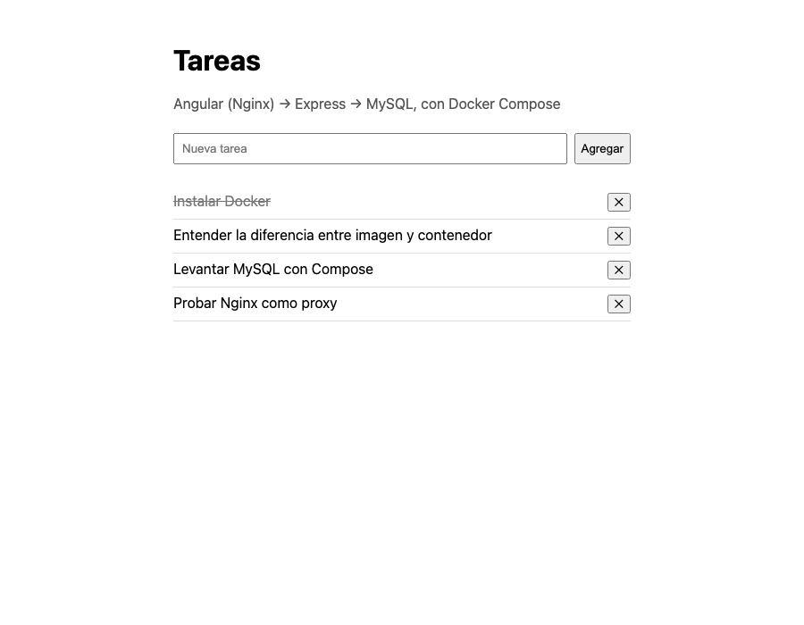

Docker desde cero
Guía práctica para programadores: de “en mi computadora funciona” a una aplicación Angular + Express + MySQL que se levanta con un comando.
Navegá con ← → · Índice con I · Atajos con ?
Cómo usar este material
Sirve para dar la clase y para estudiar solo. Cada diapositiva tiene una etiqueta que indica qué tipo de momento es.
Tipos de diapositiva
Explicación conceptos con analogías, ejemplos y diagramas.
Demo del docente se ejecuta en vivo; vos mirás y anotás qué pasa.
Actividad lo hacés vos, en tu compu.
Solución para comparar después de intentarlo.
Repaso recapitulación y preguntas para comprobar.
Cajas que se repiten
Analogía y dónde deja de servir · Resultado esperado · Error habitual · Pregunta para comprobar (con botón para ver la respuesta).
Atajos de teclado
Material complementario
- Guía en PDF para leer o imprimir.
- Ejemplos completos y probados en la carpeta
ejemplos/del repositorio. - Práctica integradora con rúbrica en
practica/.
Mapa de la clase
Doce módulos y una práctica integradora. Los tiempos son orientativos: adaptalos a tu horario.
| # | Módulo | Al terminar vas a poder… | Tiempo |
|---|---|---|---|
| 1 | El problema que resuelve Docker | Explicar para qué sirve Docker y para qué no | 20 min |
| 2 | Conceptos fundamentales | Distinguir imagen, contenedor, Dockerfile, Compose, volumen, red y puerto | 40 min |
| 3 | Instalación desde cero | Instalar Docker y ejecutar tu primer contenedor | 30 min + instalación |
| 4 | Primeros comandos | Crear, ver, detener, inspeccionar y borrar contenedores | 45 min |
| 5 | Imagen propia con Dockerfile | Dockerizar una API de Express | 50 min |
| 6 | Docker Compose | Levantar API + MySQL con un comando | 50 min |
| 7 | MySQL: datos y persistencia | Conectarte, inicializar, persistir y respaldar datos | 35 min |
| 8 | Angular + Express + MySQL | Dockerizar una aplicación completa | 55 min |
| 9 | Variables de entorno y buenas prácticas | Configurar sin exponer secretos | 25 min |
| 10 | Deploy | Entender cómo llega la app a un servidor | 40 min |
| 11 | Errores frecuentes y diagnóstico | Investigar y resolver problemas con método | 30 min |
| 12 | Repaso y cierre | Elegir la herramienta adecuada para cada tarea | 30 min |
| P | Práctica integradora | Dockerizar tu propio proyecto | 2–4 h |
Antes de empezar
Lo que conviene tener listo para que la clase sea práctica desde el primer minuto.
Alumnos
- Docker instalado y probado con
docker run hello-world(módulo 3). - Unos 10 GB libres en disco y, si es posible, 8 GB de RAM o más.
- Un editor (VS Code) y una terminal.
- Git para clonar los ejemplos:
git clone https://github.com/pedroibanez97/docker.git - Un proyecto propio Express + MySQL para la práctica final (opcional).
Docente
- Repositorio clonado y ejemplos probados en la compu que se proyecta.
- Imágenes descargadas de antemano (la red del aula puede ser lenta):
docker pull hello-world
docker pull nginx:1.30-alpine
docker pull httpd:2.4-alpine
docker pull node:24-alpine
docker pull mysql:8.4- Plan B para quien no pueda instalar (ver módulo 3).
El problema que resuelve Docker
Antes de aprender comandos, entendamos qué dolor de cabeza viene a resolver.
Objetivo
Explicar con tus palabras qué es Docker, qué problemas resuelve y cuáles no.
Vamos a ver
- “En mi computadora funciona”
- Qué cambia entre computadoras
- Qué es (y qué no es) Docker
- Casos de uso reales
Tiempo estimado
20 minutos · sin computadoras todavía
“En mi computadora funciona”
Terminaste tu API de Express con MySQL. Funciona perfecto. Se la pasás a otra persona del equipo y…
Tu compu
- macOS · Node 24 · MySQL 8.4
- Base
tareas_dbcreada a mano hace meses - Archivo
.envcon tus credenciales
$ npm start API escuchando en el puerto 3000
La otra compu
- Windows · Node 18 · MySQL instalado en otra versión (o ninguno)
- No existe la base ni el usuario
- Sin
.env(no se sube a GitHub, ¡bien!)
$ npm start Error: connect ECONNREFUSED 127.0.0.1:3306
El código es el mismo. Lo que cambia es el entorno: todo lo que el código necesita alrededor para funcionar.
¿Qué cambia de una computadora a otra?
| Fuente de diferencias | Ejemplo en un proyecto Express + MySQL | Síntoma típico |
|---|---|---|
| Sistema operativo | Rutas C:\ vs /home, mayúsculas en nombres de archivo, saltos de línea | “Funciona en Windows pero no en el servidor Linux” |
| Versión del runtime | Node 18 vs Node 24 | Sintaxis o funciones que no existen en la versión vieja |
| Dependencias | npm install sin lockfile instala versiones distintas | Una librería se comporta distinto |
| Configuración | Variables de entorno, puertos, credenciales | undefined donde esperabas un valor |
| Servicios externos | MySQL instalado o no, otra versión, otra base | ECONNREFUSED, Access denied, tabla inexistente |
De los problemas que contaron al principio de la clase, ¿en qué fila de la tabla cae cada uno?
Una analogía: el contenedor de transporte
Antes de los contenedores de carga, cada barco, tren o camión se cargaba distinto: bolsas, cajones, barriles. Cada traslado era lento y algo se rompía.
Con una caja estándar, cualquier grúa, barco o camión puede mover la carga sin saber qué hay adentro.
Docker empaqueta tu aplicación junto con lo que necesita (Node, dependencias, configuración por defecto) en un formato estándar. Cualquier computadora con Docker la puede ejecutar igual.
- Un contenedor de Docker no es una caja cerrada e inerte: ejecuta procesos, abre puertos y se comunica con otros contenedores.
- Lo que se guarda adentro de un contenedor se pierde si lo borrás (salvo que uses volúmenes: módulo 7).
- No es “portable a cualquier cosa”: los contenedores de Linux necesitan un kernel Linux. En macOS y Windows, Docker Desktop lo provee con una máquina virtual liviana.
¿Qué es Docker?
Docker es una plataforma para empaquetar una aplicación con todo lo que necesita y ejecutarla de forma aislada y repetible en cualquier máquina que tenga Docker.
Empaquetar
Tu código + Node + dependencias + configuración por defecto quedan en una imagen: un paquete de solo lectura.
Ejecutar aislado
Cada imagen se ejecuta como un contenedor: un proceso con su propio sistema de archivos, red y variables.
Repetir igual
La misma imagen produce el mismo entorno en tu compu, en la de tu equipo y en el servidor.
Imagen y contenedor son los dos conceptos centrales. Los vemos en detalle en el módulo 2; por ahora: la imagen es el paquete, el contenedor es ese paquete funcionando.
Antes y después de Docker
README sin Docker: instalá Node 24, instalá MySQL 8.4, creá la base, creá el usuario, ejecutá el script SQL, copiá el .env, npm install, npm start… y rezá.
README con Docker:
git clone https://github.com/equipo/proyecto.git
cp .env.example .env
docker compose up -dQué resuelve Docker… y qué no
Resuelve
- Reproducir el mismo entorno en cualquier compu.
- Levantar servicios (MySQL, Nginx) sin instalarlos en tu sistema.
- Tener varias versiones a la vez: MySQL 8.4 para un proyecto y 9 para otro.
- Que alguien nuevo arranque el proyecto en minutos.
- Llevar a producción lo mismo que probaste.
No resuelve
- Errores de tu código o un mal diseño de la base de datos.
- La seguridad por sí solo: una contraseña débil sigue siendo débil.
- La performance: no hace más rápida una consulta lenta.
- Las copias de seguridad: si no las hacés, no existen.
- Todas las diferencias: arquitectura del procesador (Intel vs ARM) y kernel siguen importando.
Tu API tiene un bug que devuelve tareas duplicadas. ¿Lo arregla dockerizarla?
No. Docker reproduce el entorno; el bug viaja con el código y va a aparecer igual en todas las computadoras. Eso sí: al ser reproducible, es más fácil que otra persona lo vea y lo corrija.
Casos de uso reales
Desarrollo
Levantar MySQL para un proyecto sin instalarlo. Borrar la base y empezar de cero en segundos.
Trabajo en equipo
Todo el equipo usa las mismas versiones. El entorno queda escrito en archivos versionados en Git.
Pruebas
Una base limpia para cada corrida de tests. Probar la app con otra versión de Node o MySQL sin romper tu compu.
Despliegue
La imagen que probaste es la que corre en el servidor. Actualizar o volver atrás es cambiar de versión de imagen.
Ejemplo concreto: en la empresa A usan MySQL 8.0 y en tu proyecto de la facultad MySQL 8.4. Con Docker cada proyecto tiene su propio contenedor de MySQL, con su versión, y no se pisan.
Qué NO es Docker
No es un lenguaje
Seguís programando en JavaScript, TypeScript y SQL. Docker ejecuta lo que ya hacés.
No es un framework
No reemplaza a Express ni a Angular, ni cambia cómo organizás tu código.
No es una máquina virtual tradicional
No emula una computadora completa con su propio sistema operativo. Los contenedores comparten el kernel del sistema (módulo 2).
No reemplaza a Git
Git versiona tu código. Docker usa ese código para construir imágenes. Se usan juntos.
No es “la nube”
Funciona en tu compu, sin Internet una vez descargadas las imágenes. Muchos servicios en la nube lo usan, pero son cosas distintas.
No es magia
Si la app necesita una variable y no se la pasás, falla igual que sin Docker.
Recapitulación del módulo 1
- El problema no suele ser el código sino el entorno.
- Docker empaqueta la app con su entorno en una imagen y la ejecuta como contenedor.
- Resuelve reproducibilidad; no resuelve bugs, seguridad ni backups por sí solo.
Explicale a alguien que no programa, en una oración, para qué sirve Docker.
Por ejemplo: “Sirve para que un programa funcione igual en cualquier computadora, porque viaja con todo lo que necesita”.
Nombrá dos cosas que cambian entre computadoras y pueden romper un proyecto Express + MySQL.
La versión de Node, la versión o existencia de MySQL, las variables de entorno, el sistema operativo, las versiones de las dependencias.
Conceptos fundamentales
Las piezas de Docker, una por una, y cómo encajan entre sí.
Objetivo
Distinguir imagen, contenedor, Dockerfile, Compose, registro, volumen, red, puerto y variables de entorno.
Vamos a ver
- El mapa general
- Engine, CLI y Desktop
- Imagen vs contenedor
- Contenedor vs máquina virtual
- Dockerfile, registro y Compose
- Volúmenes, redes, puertos y variables
Tiempo estimado
40 minutos · conceptual, con diagramas
El mapa general
Todo lo que vamos a aprender cabe en este dibujo. Lo vamos a ir recorriendo.
Docker Engine, CLI y Docker Desktop
Docker Engine
El “motor”: un servicio en segundo plano que hace el trabajo real. Necesita un kernel Linux.
CLI docker
El programa que usás en la terminal. Solo envía pedidos al Engine. CLI = interfaz de línea de comandos.
Docker Desktop
La aplicación para macOS y Windows (también existe para Linux): trae Engine, CLI, Compose, una interfaz gráfica y la VM Linux.
La CLI es el mozo que toma el pedido; el Engine es la cocina. Si la cocina está cerrada (Docker Desktop apagado), el mozo no puede hacer nada: por eso aparece Cannot connect to the Docker daemon.
Imagen
Una imagen es un paquete de solo lectura con todo lo necesario para ejecutar algo: un sistema de archivos mínimo, el runtime (Node, MySQL…), las dependencias, tu código y la indicación de qué comando ejecutar al iniciar.
- Se identifica por nombre:etiqueta:
mysql:8.4,node:24-alpine,api-express:1.0. - Está formada por capas que se reutilizan entre imágenes (módulo 5).
- No cambia: para modificarla se construye una nueva.
La imagen mysql:8.4 trae MySQL 8.4 instalado y configurado para arrancar. No tenés que instalar MySQL en tu sistema.
Una imagen es como una receta impresa o un molde: con el mismo molde podés hacer muchas tortas iguales, y el molde no se gasta.
Si pensás en clases y objetos: la imagen es la clase y cada contenedor es un objeto creado con new.
Una imagen no es código que se “instancia” en memoria como un objeto: son archivos y metadatos guardados en disco. Y la receta no es la imagen: la receta es el Dockerfile; la imagen es el resultado ya preparado.
Contenedor
Un contenedor es una imagen en ejecución (o detenida): un proceso aislado con su propio sistema de archivos, su red, su nombre y sus variables de entorno.
- Se crea a partir de una imagen con
docker run. - Tiene una capa de escritura propia: lo que se modifica adentro queda ahí… hasta que el contenedor se borra.
- Puede estar corriendo, detenido o eliminado.
- Vive mientras vive su proceso principal: si la app termina, el contenedor se detiene.
Un edificio de departamentos: cada departamento (contenedor) tiene su puerta, sus muebles y su llave, pero todos comparten los cimientos, el agua y la luz del edificio (el kernel del sistema).
Si “demolés” un departamento (borrás el contenedor), sus muebles desaparecen. En Docker, los datos importantes se guardan fuera, en un volumen, como una baulera del edificio.
Guardar la base de datos “adentro” del contenedor y perderla al recrearlo. Lo resolvemos en el módulo 7.
Imagen vs contenedor
| Imagen | Contenedor | |
|---|---|---|
| Qué es | Paquete de solo lectura | Proceso en ejecución creado desde una imagen |
| Analogía | Molde · clase | Torta · objeto |
| ¿Cambia? | No; se construye otra | Sí, en su capa de escritura (se pierde al borrarlo) |
| Cómo se crea | docker build o docker pull | docker run |
| Cómo se lista | docker images | docker ps -a |
Contenedor vs máquina virtual
| Máquina virtual | Contenedor | |
|---|---|---|
| Incluye | Un SO completo con su kernel | App y librerías; usa el kernel del anfitrión |
| Arranque | Minutos | Segundos o menos |
| Tamaño | Gigabytes | Decenas o cientos de MB |
| Aislamiento | Más fuerte | Bueno, pero comparten kernel |
Las VM son casas: cada una con sus cimientos y su instalación eléctrica. Los contenedores son departamentos: comparten la estructura del edificio.
El kernel es el núcleo del sistema operativo: administra procesos, memoria, archivos y red. macOS y Windows no tienen kernel Linux, por eso Docker Desktop usa una VM Linux liviana y tus contenedores comparten ese kernel.
Dockerfile
Un Dockerfile es un archivo de texto con las instrucciones para construir una imagen: de qué imagen partir, qué archivos copiar, qué instalar y qué comando ejecutar al iniciar.
FROM node:24-alpine
...
WORKDIR /app
...
COPY package.json package-lock.json ./
...
RUN npm ci --omit=dev
...
COPY . .
...
CMD ["node", "src/index.js"]docker build -t api-express:1.0 . lee el Dockerfile y produce la imagen api-express:1.0.
El Dockerfile es la receta; la imagen es la comida ya preparada y envasada; el contenedor es esa comida servida en la mesa.
Una receta de cocina puede salir distinta cada vez. Un Dockerfile bien escrito (versiones explícitas, lockfile) produce siempre el mismo resultado.
Lo escribimos completo, instrucción por instrucción, en el módulo 5.
Registro de imágenes y Docker Hub
Un registro es un servidor que guarda y distribuye imágenes. Docker Hub (hub.docker.com) es el registro público que Docker usa por defecto. Hay otros: GitHub Container Registry (GHCR), los de cada nube o uno propio de la empresa.
docker pulldescarga una imagen del registro.docker pushsube una imagen tuya.- Las imágenes oficiales (node, mysql, nginx) están mantenidas y revisadas: preferilas.
Docker Hub es a las imágenes lo que npm es a los paquetes de JavaScript.
Un paquete de npm es una librería que importás en tu código. Una imagen es un entorno completo que se ejecuta: no se “importa”.
Anatomía del nombre de una imagen
Si omitís partes, Docker completa: mysql = docker.io/library/mysql:latest. Una imagen tuya en Docker Hub sería tu-usuario/tareas-backend:1.0.0.
latest no significa “la más nueva y estable”: es solo la etiqueta por defecto. Usá siempre una versión explícita, como mysql:8.4.
Docker Compose
Una app real tiene varias piezas: API, base de datos, frontend. Docker Compose describe todas en un archivo compose.yaml y las levanta juntas con un comando.
services:
db:
image: mysql:8.4
...
backend:
build: ./backend
...
ports:
- "3000:3000"docker compose up -d| Dockerfile | compose.yaml | |
|---|---|---|
| Describe | Cómo construir una imagen | Cómo ejecutar varios contenedores juntos |
| Contiene | FROM, COPY, RUN, CMD… | Servicios, puertos, variables, volúmenes, redes |
| Comando | docker build | docker compose up |
| Relación | Compose puede usar un Dockerfile con build: o una imagen existente con image: | |
Si el Dockerfile es la receta de un plato, compose.yaml es el menú del evento: qué platos van, en qué orden y en qué mesa.
Se escribe docker compose (con espacio). El viejo docker-compose con guion ya no se usa.
Volumen
Un volumen es un espacio de almacenamiento que administra Docker, fuera del ciclo de vida del contenedor. Se “monta” en una carpeta del contenedor.
- Volumen con nombre (
datos-mysql:/var/lib/mysql): lo administra Docker. Ideal para bases de datos. - Bind mount (
./db/init:/docker-entrypoint-initdb.d): una carpeta de tu compu se ve dentro del contenedor. Ideal para archivos que editás vos.
La baulera del edificio: aunque vacíes o cambies de departamento, lo que guardaste en la baulera sigue ahí.
Un volumen no es una copia de seguridad: si lo borrás (docker compose down -v) o se rompe el disco, se pierde. Los backups se hacen aparte (módulo 7).
Red
Una red de Docker conecta contenedores entre sí. Dentro de una misma red, cada contenedor encuentra a los otros por su nombre de servicio, como si fuera un dominio.
// Dentro de la red de Compose, "db" es el nombre del servicio MySQL
host: 'db',
port: 3306,Dentro de un contenedor, localhost es el propio contenedor, no tu compu ni otro contenedor. Es el error más común del curso: lo vemos a fondo en el módulo 7.
Los internos telefónicos de una oficina: desde adentro marcás “contabilidad” y te comunica; desde la calle no podés marcar un interno, tenés que llamar al número público (el puerto publicado).
Compose crea una red automáticamente para cada proyecto. En los ejemplos la declaramos con nombre (red-app) para que se vea explícitamente.
Puerto publicado
Los contenedores están aislados: desde tu compu no podés entrar a sus puertos… salvo que los publiques.
-p 8080:80 se lee “puerto de tu compu : puerto del contenedor”. En Compose: ports: - "8080:80".
Un puerto es un número que identifica a qué programa va una conexión en una máquina: 3306 suele ser MySQL, 80 HTTP, 3000 tu API.
La recepción de un edificio: el visitante llega a la puerta 8080 de la calle y la recepción lo acompaña al departamento, puerta 80.
Invertir los números (-p 80:8080) o publicar un puerto en el que la app no escucha. Si no estás seguro, el de la derecha es el de la app.
Variables de entorno
Las variables de entorno son pares NOMBRE=valor que el sistema le pasa a un proceso. Ya las usás en Node con process.env.
Con Docker se usan para que la misma imagen funcione con distinta configuración: otro puerto, otra base de datos, otro mensaje, desarrollo o producción.
docker run -e MENSAJE="Hola desde otra configuración" api-express:1.0const MENSAJE = process.env.MENSAJE ?? 'Hola desde un contenedor';Las perillas de un electrodoméstico: el aparato (imagen) es el mismo; la temperatura que elegís (variables) cambia el resultado.
Las contraseñas también se pasan como variables, pero nunca se escriben dentro del Dockerfile ni se suben a GitHub. Lo vemos en el módulo 9.
Resumen: las piezas de Docker
| Concepto | Qué es | Analogía | Lo vas a usar con… |
|---|---|---|---|
| Docker Engine | Servicio que construye y ejecuta | La cocina | (trabaja solo, en segundo plano) |
| Docker Desktop | App que trae Engine, CLI, Compose y la VM | El local completo | Abrir la app antes de trabajar |
| Imagen | Paquete de solo lectura | Molde · clase | docker pull, docker images |
| Contenedor | Imagen en ejecución | Torta · objeto · departamento | docker run, docker ps |
| Dockerfile | Instrucciones para construir una imagen | Receta | docker build |
| Compose | Varios servicios descriptos en un archivo | Menú del evento | docker compose up |
| Registro | Servidor que guarda imágenes | npm para imágenes | docker push / pull |
| Volumen | Datos fuera del contenedor | Baulera | volumes: |
| Red | Conexión entre contenedores por nombre | Internos telefónicos | networks: |
| Puerto publicado | Entrada desde tu compu al contenedor | Recepción del edificio | -p 8080:80 |
| Variable de entorno | Configuración que recibe el proceso | Perillas | -e, environment: |
Comprobemos
¿Puedo tener tres contenedores corriendo a partir de la misma imagen?
Sí. Cada uno tiene su propia capa de escritura, nombre y puertos. La imagen no se modifica.
Borré un contenedor de MySQL que no tenía volumen. ¿Qué pasó con los datos?
Un contenedor nuevo arranca con una base vacía: los datos estaban ligados a ese contenedor. Con un volumen con nombre se habrían conservado.
¿Cuál es la diferencia entre un Dockerfile y un compose.yaml?
El Dockerfile describe cómo construir una imagen. El compose.yaml describe cómo ejecutar varios contenedores juntos (con sus puertos, variables, redes y volúmenes), y puede usar Dockerfiles para construir.
Un contenedor, ¿tiene su propio kernel como una máquina virtual?
No. Comparte el kernel del sistema anfitrión (en macOS/Windows, el de la VM Linux de Docker Desktop). Por eso arranca tan rápido y pesa menos.
Instalación desde cero
Instrucciones para macOS, Windows y Linux, basadas en la documentación oficial de Docker (revisada en octubre de 2026).
Objetivo
Tener Docker funcionando y ejecutar, detener y borrar tu primer contenedor.
Vamos a ver
- Qué instalar según tu sistema
- Paso a paso por sistema operativo
- Verificar la instalación
- Primer contenedor:
hello-world - Problemas frecuentes y plan B
Tiempo estimado
30 minutos en clase, más la descarga e instalación (ideal: hacerla antes).
¿Qué hay que instalar?
| Sistema | Qué instalar (recomendado para aprender) | Requisitos principales |
|---|---|---|
| macOS | Docker Desktop (versión para Apple silicon o para Intel) | macOS actual o una de las dos versiones anteriores · 4 GB de RAM o más |
| Windows | Docker Desktop con WSL 2 | Windows 10 22H2 (build 19045) o Windows 11 23H2 (build 22631) o posterior, 64 bits · WSL 2.1.5 o posterior · virtualización activada · 8 GB de RAM |
| Linux | Docker Engine + plugin Compose desde el repositorio oficial (o Docker Desktop for Linux) | Distribución de 64 bits soportada (por ejemplo Ubuntu 22.04, 24.04 o 26.04 LTS) |
WSL 2 (Windows Subsystem for Linux) permite ejecutar un kernel Linux real dentro de Windows. Docker Desktop lo usa para correr los contenedores.
Licencia: Docker Desktop es gratuito para uso personal, educativo, proyectos open source no comerciales y empresas pequeñas (menos de 250 empleados y menos de USD 10 millones de facturación anual). Empresas más grandes necesitan una suscripción paga. Docker Engine en Linux es software libre.
Documentación oficial: macOS · Windows · Linux (Engine) · Linux (Desktop)
Instalación en macOS
- Averiguá tu procesador: menú → Acerca de esta Mac. Si dice Chip Apple M1/M2/M3… es Apple silicon; si dice Procesador Intel, es Intel. También:
uname -men la Terminal muestraarm64ox86_64. - Descargá
Docker.dmgdesde la página oficial, eligiendo la versión de tu procesador. - Instalá: abrí
Docker.dmgy arrastrá el ícono de Docker a la carpeta Aplicaciones. - Iniciá Docker desde Aplicaciones. Aceptá el acuerdo de servicio (sin aceptarlo no arranca). Iniciar sesión es opcional.
- Esperá a que el ícono de la ballena en la barra de menú indique que Docker Desktop está en ejecución (Engine running).
- Opcional en Apple silicon: instalar Rosetta 2, que Docker recomienda para algunas herramientas.
softwareupdate --install-rosettaDescargar la versión del procesador equivocado: la app no abre o indica que no es compatible. Borrala de Aplicaciones y descargá la otra.
Docker Desktop no inicia solo al prender la compu salvo que lo configures en Settings → General. Si un comando falla con “Cannot connect to the Docker daemon”, abrí la app.
Instalación en Windows (con WSL 2)
- Verificá tu versión: Win + R, escribí
winver. Necesitás Windows 10 22H2 o Windows 11 23H2 o posterior, de 64 bits. - Verificá la virtualización: Administrador de tareas → Rendimiento → CPU → “Virtualización: Habilitado”. Si dice deshabilitado, activala en la BIOS/UEFI (Intel VT-x o AMD-V/SVM).
- Instalá o actualizá WSL 2: abrí PowerShell como administrador y ejecutá los comandos de la derecha. Reiniciá si te lo pide.
- Descargá
Docker Desktop Installer.exedesde la página oficial. - Instalá: en la pantalla de configuración dejá marcada Use WSL 2 instead of Hyper-V. Al terminar, Close (y reiniciá si lo pide).
- Iniciá Docker Desktop desde el menú Inicio (no arranca solo después de instalar). Aceptá el acuerdo y esperá a que indique Engine running.
wsl --install
wsl --update
wsl --versionwsl --version muestra la versión de WSL: tiene que ser 2.1.5 o posterior.
Los comandos de Docker se usan desde PowerShell o Windows Terminal normales; no hace falta entrar a Linux.
Instalación en Linux (Ubuntu)
Docker Engine desde el repositorio oficial. Para otras distribuciones, seguí la guía oficial de tu distribución.
sudo apt remove $(dpkg --get-selections docker.io docker-compose docker-compose-v2 docker-doc docker-buildx podman-docker containerd runc | cut -f1)# Agregar la clave GPG oficial de Docker:
sudo apt update
sudo apt install ca-certificates curl
sudo install -m 0755 -d /etc/apt/keyrings
sudo curl -fsSL https://download.docker.com/linux/ubuntu/gpg -o /etc/apt/keyrings/docker.asc
sudo chmod a+r /etc/apt/keyrings/docker.asc
# Agregar el repositorio a las fuentes de Apt:
sudo tee /etc/apt/sources.list.d/docker.sources <<EOF
Types: deb
URIs: https://download.docker.com/linux/ubuntu
Suites: $(. /etc/os-release && echo "${UBUNTU_CODENAME:-$VERSION_CODENAME}")
Components: stable
Architectures: $(dpkg --print-architecture)
Signed-By: /etc/apt/keyrings/docker.asc
EOF
sudo apt updatesudo apt install docker-ce docker-ce-cli containerd.io docker-buildx-plugin docker-compose-plugin
sudo systemctl status docker
sudo docker run hello-worldsudo groupadd docker
sudo usermod -aG docker $USER
newgrp docker
docker run hello-worldPertenecer al grupo docker equivale a tener privilegios de root en esa máquina. Está bien en tu compu de estudio; pensalo dos veces en un servidor compartido.
sudo systemctl enable docker.service
sudo systemctl enable containerd.serviceAbrir una terminal
Todos los comandos docker se escriben en una terminal de tu sistema. No importa la carpeta en la que estés, salvo cuando trabajemos con archivos de un proyecto.
- ⌘ + Espacio, escribí Terminal y Enter.
- O en VS Code: menú Terminal → New Terminal (Ctrl + `).
- Menú Inicio, escribí PowerShell o Terminal y Enter (no hace falta como administrador para usar Docker).
- O en VS Code: Terminal → New Terminal.
- Si un comando de esta guía usa sintaxis de bash (por ejemplo, redirecciones con
<), vas a ver una alternativa para PowerShell. También podés usar Git Bash.
- Ctrl + Alt + T en la mayoría de los escritorios.
- O en VS Code: Terminal → New Terminal.
Cuando un comando dependa de la carpeta (por ejemplo docker build . o docker compose up), te lo vamos a indicar: hay que estar en la carpeta del proyecto. Usá cd para moverte y ls (o dir en PowerShell) para ver qué hay.
Verificar la instalación
docker --version
docker compose versionDocker version 28.5.1, build e180ab8 Docker Compose version v2.40.3-desktop.1
docker --version: confirma que la CLI está instalada.docker compose version: confirma que el plugin de Compose está disponible.
docker infoServer: Containers: 0 Images: 0 Server Version: 28.5.1 Operating System: Docker Desktop OSType: linux Architecture: aarch64
docker info consulta al Engine. Si muestra la sección Server, Docker está funcionando. Architecture dice aarch64 en procesadores ARM (Apple silicon) y x86_64 en Intel/AMD.
docker --version funciona pero docker info falla con Cannot connect to the Docker daemon: la CLI está instalada pero el Engine no está iniciado. Abrí Docker Desktop (o sudo systemctl start docker en Linux).
Tu primer contenedor: hello-world
docker run hello-worldUnable to find image 'hello-world:latest' locally
latest: Pulling from library/hello-world
...
Hello from Docker!
This message shows that your installation appears to be working correctly.
To generate this message, Docker took the following steps:
1. The Docker client contacted the Docker daemon.
2. The Docker daemon pulled the "hello-world" image from the Docker Hub.
3. The Docker daemon created a new container from that image which runs the
executable that produces the output you are currently reading.
4. The Docker daemon streamed that output to the Docker client, which sent it
to your terminal.¿Qué pasó? (los 4 pasos, traducidos)
- La CLI le pidió al Engine ejecutar
hello-world. - El Engine no tenía la imagen y la descargó de Docker Hub (Unable to find image… locally no es un error).
- Creó un contenedor a partir de la imagen, que ejecutó un programa que imprime el mensaje.
- El Engine envió esa salida a tu terminal. El programa terminó, así que el contenedor se detuvo.
Si lo ejecutás de nuevo, ¿vuelve a descargar la imagen?
No: la imagen ya está en tu compu. Se crea otro contenedor nuevo a partir de ella (y se ve solo el mensaje).
Ver, detener y eliminar ese contenedor
docker ps -aCONTAINER ID IMAGE COMMAND CREATED STATUS PORTS NAMES b4b4c010a030 hello-world "/hello" 10 seconds ago Exited (0) 9 seconds ago eager_hopper
docker ps -alista todos los contenedores, también los detenidos.Exited (0): terminó solo, sin error (código 0). No hace falta detenerlo.NAMES: si no le das nombre, Docker inventa uno (eager_hopper).
# borrar el contenedor (usá tu ID o tu nombre)
docker rm eager_hopper
# borrar la imagen (ya no la usa ningún contenedor)
docker rmi hello-worlddocker rm imprime el nombre o ID borrado. docker rmi muestra Untagged y Deleted.
conflict: unable to delete hello-world:latest (must be forced) - container … is using its referenced image: todavía existe un contenedor (aunque esté detenido) creado con esa imagen. Borrá primero los contenedores con docker rm.
Para detener un contenedor que sigue corriendo se usa docker stop. Lo practicamos en el módulo 4.
Problemas frecuentes de instalación (1 de 2)
| Síntoma | Causa probable | Solución |
|---|---|---|
docker: command not found / “no se reconoce como nombre de un cmdlet” | Terminal abierta antes de instalar, o Docker no quedó en el PATH | Cerrá y abrí la terminal. Verificá que Docker Desktop esté instalado y que haya iniciado al menos una vez. |
Cannot connect to the Docker daemon at unix:///…/docker.sock. Is the docker daemon running? | Docker Desktop cerrado o el servicio detenido | Abrí Docker Desktop y esperá Engine running. Linux: sudo systemctl start docker. |
Windows: error during connect: … open //./pipe/dockerDesktopLinuxEngine: The system cannot find the file specified. | Docker Desktop no está en ejecución | Iniciá Docker Desktop desde el menú Inicio y esperá a que termine de arrancar. |
| Windows: aviso de que WSL falta o está desactualizado | WSL no instalado o anterior a 2.1.5 | PowerShell como administrador: wsl --update (o wsl --install) y reiniciar. |
| Windows: “Virtualization support not detected” | Virtualización desactivada en BIOS/UEFI | Activar Intel VT-x o AMD-V (SVM) en la BIOS/UEFI. |
Problemas frecuentes de instalación (2 de 2)
| Síntoma | Causa probable | Solución |
|---|---|---|
Linux: permission denied while trying to connect to the Docker daemon socket | Tu usuario no tiene permiso | Usá sudo o agregate al grupo docker y volvé a iniciar sesión. |
docker-compose: command not found | Comando viejo (v1) | Usá docker compose con espacio. En Linux, instalá docker-compose-plugin. |
| Docker Desktop queda “Starting…” para siempre | Poca RAM o disco, VM trabada | Reiniciá Docker Desktop (menú de la ballena → Restart) o la compu. Liberá espacio en disco. |
TLS handshake timeout o descargas que no avanzan | Red lenta, proxy o firewall | Reintentá, probá otra red o configurá el proxy en Settings → Resources → Proxies. |
no space left on device | Disco o disco virtual de Docker lleno | docker system df para ver el uso; borrá contenedores e imágenes que no uses (módulo 4). |
Plan B: si la instalación no sale hoy
Trabajar en pareja
Con alguien que tenga Docker funcionando. Alternen quién escribe los comandos.
GitHub Codespaces
Un entorno de desarrollo en el navegador. La imagen por defecto incluye Docker; verificá con docker --version. Tiene horas gratuitas mensuales (más con el GitHub Student Developer Pack). Probalo antes de la clase.
Seguir con el material
Toda la clase tiene la salida esperada de cada comando. Leé las demos, anotá dudas y resolvé la instalación con la tabla anterior.
En compus de laboratorio sin permisos de administrador no se puede instalar Docker Desktop. Consultá con quien administra el laboratorio o usá el plan B.
Recapitulación del módulo 3
- macOS y Windows: Docker Desktop (en Windows, con WSL 2). Linux: Docker Engine + plugin Compose.
docker --versionprueba la CLI;docker infoprueba el Engine.docker run hello-worlddescarga una imagen, crea un contenedor, lo ejecuta y termina.- Los contenedores detenidos siguen existiendo hasta que los borrás con
docker rm.
Abrís una terminal, escribís docker run hello-world y aparece Cannot connect to the Docker daemon. ¿Qué revisás primero?
Que Docker Desktop esté abierto y diga Engine running (o que el servicio docker esté activo en Linux). La CLI funciona, pero no hay Engine que la atienda.
Primeros comandos
Con un servidor web (nginx) vamos a descargar, ejecutar, mirar por dentro, detener, borrar y recrear contenedores.
Objetivo
Manejar el ciclo de vida de un contenedor y publicar un puerto para verlo en el navegador.
Comandos
pull · images · run · ps · logs · stop · start · restart · exec · inspect · rm · rmi
Tiempo estimado
45 minutos · cada uno en su compu
Cómo se lee un comando de Docker
- Las opciones empiezan con
-(cortas:-d) o--(largas:--name). - A un contenedor lo podés nombrar por su nombre (
web) o por su ID; alcanza con los primeros caracteres del ID (4084). - Muchos comandos tienen dos formas:
docker ps=docker container ls;docker images=docker image ls.
docker --help
docker run --helpEstos comandos funcionan desde cualquier carpeta, en la terminal de tu sistema (Terminal, PowerShell o la de VS Code).
docker pull y docker images
Para qué: descargar una imagen de un registro sin ejecutarla todavía.
docker pull nginx:1.30-alpine1.30-alpine: Pulling from library/nginx ... Digest: sha256:970364228b1e4f93... Status: Downloaded newer image for nginx:1.30-alpine docker.io/library/nginx:1.30-alpine
Si ya la tenías: Status: Image is up to date. La etiqueta 1.30-alpine es nginx 1.30 sobre Alpine Linux, una distribución mínima.
Para qué: ver qué imágenes tenés en tu compu.
docker imagesREPOSITORY TAG IMAGE ID CREATED SIZE nginx 1.30-alpine 970364228b1e 4 days ago 101MB
- REPOSITORY y TAG: nombre y versión.
- IMAGE ID: identificador único (abreviado).
- CREATED: cuándo se construyó la imagen, no cuándo la descargaste.
Según la versión de Docker, las columnas pueden cambiar un poco de nombre o de orden. La información es la misma.
docker run: en primer plano y en segundo plano
En primer plano
docker run nginx:1.30-alpine/docker-entrypoint.sh: Configuration complete; ready for start up ... [notice] 1#1: nginx/1.30.6 ... [notice] 1#1: start worker processes
La terminal queda “tomada” mostrando los registros. Ctrl + C detiene el contenedor. Útil para ver errores al instante; incómodo para trabajar.
En segundo plano, con nombre y puerto
docker run -d --name web -p 8080:80 nginx:1.30-alpine408427da62fed8ab2eccdfc1e7034244d3eeb5fac60cad8fa924f0e1bf5a6625
-d(detached): corre en segundo plano y te devuelve la terminal.--name web: un nombre fácil para referirte a él.-p 8080:80: publica el puerto 80 del contenedor en el 8080 de tu compu.
docker run hace tres cosas: descarga la imagen si no está (pull), crea un contenedor nuevo y lo inicia. Cada run crea un contenedor distinto.
Ver el contenedor en el navegador
Con el contenedor web corriendo, abrí http://localhost:8080 en tu navegador.
La página “Welcome to nginx!”. Tu navegador habló con el puerto 8080 de tu compu y Docker reenvió la conexión al puerto 80 del contenedor.
También desde la terminal:
curl http://localhost:8080Bind for 0.0.0.0:8080 failed: port is already allocated o address already in use: otro programa (u otro contenedor) ya usa el 8080 de tu compu. Elegí otro número a la izquierda: -p 8081:80.
¿Qué pasa si ejecutás el contenedor sin -p?
El contenedor funciona, nginx escucha en su puerto 80, pero desde tu compu no hay forma de llegar: ningún puerto de tu compu está conectado a él.
¿Podés tener dos contenedores nginx a la vez, uno en 8080 y otro en 8081?
Sí: cada uno escucha en su propio puerto 80 interno, y en tu compu se publican en puertos distintos. Lo que no se puede es usar el mismo puerto de tu compu dos veces.
docker ps y docker ps -a
docker psCONTAINER ID IMAGE COMMAND CREATED STATUS PORTS NAMES 408427da62fe nginx:1.30-alpine "/docker-entrypoint.…" 2 minutes ago Up 2 minutes 0.0.0.0:8080->80/tcp, [::]:8080->80/tcp web
- STATUS
Up 2 minutes: corriendo desde hace 2 minutos. - PORTS
0.0.0.0:8080->80/tcp: el 8080 de tu compu (en todas sus interfaces) va al 80 del contenedor.[::]es lo mismo para IPv6. - COMMAND: el proceso principal del contenedor.
docker ps -aMuestra también los detenidos, con Exited (código). El código 0 significa que terminó bien; cualquier otro, que terminó con error.
“Mi contenedor desapareció”: no aparece en docker ps porque está detenido. Buscalo con docker ps -a y mirá sus registros.
docker logs: lo que imprime el contenedor
docker logs web
docker logs --tail 20 web # solo las últimas 20 líneas
docker logs -f web # seguir en vivo (Ctrl+C para salir)... [notice] 1#1: start worker processes 192.168.65.1 - - [19/Oct/2026:18:43:25 +0000] "GET / HTTP/1.1" 200 896 "-" "Mozilla/5.0 ..."
Para qué: ver todo lo que el proceso principal escribe en la salida estándar y de error. Es lo mismo que ves en la consola cuando hacés npm start.
Ante cualquier problema, lo primero es docker logs. Ahí aparecen los errores de tu app, de MySQL o de nginx.
Ctrl + C en docker logs -f deja de mostrar los registros; no detiene el contenedor.
Ciclo de vida: stop, start, restart, rm
docker stop web # detiene (envía SIGTERM; si no termina en 10 s, lo fuerza)
docker start web # vuelve a iniciar EL MISMO contenedor, con la misma configuración
docker restart web # stop + startSIGTERM es la señal que le pide a un proceso que termine de forma ordenada. Por eso en nuestra API de Express vamos a escuchar process.on('SIGTERM', …).
docker exec: ejecutar algo dentro de un contenedor
docker exec -it web shls /usr/share/nginx/html
cat /etc/os-release
exit50x.html index.html NAME="Alpine Linux" ID=alpine ...
-it: modo interactivo con terminal (para escribir comandos adentro).sh: el intérprete de comandos. Las imágenes Alpine traensh, nobash.exitsale del contenedor sin detenerlo.
Para un solo comando, sin entrar:
docker exec web nginx -vError response from daemon: container … is not running: exec solo funciona con contenedores en ejecución. Inicialo con docker start.
exec: "bash": executable file not found: esa imagen no trae bash. Usá sh.
docker inspect: toda la ficha técnica
docker inspect web[
{
"Id": "408427da62fed8ab2eccdfc1e70342...",
"Created": "2026-10-19T18:43:24.495114508Z",
"Path": "/docker-entrypoint.sh",
"State": { "Status": "running", ... },
...Para qué: ver la configuración real de un contenedor (o imagen, red, volumen): estado, variables de entorno, puertos, volúmenes montados, IP.
Para extraer un solo dato:
docker inspect --format '{{.State.Status}}' webrunning
inspect muestra las variables de entorno, incluidas las contraseñas. No compartas su salida completa en capturas o foros.
En cmd.exe de Windows, cambiá las comillas simples por dobles. En PowerShell funcionan tal cual.
docker rm y docker rmi: borrar
Contenedores
docker rm webError response from daemon: cannot remove container "web": container is running: stop the container before removing or force remove
docker stop web
docker rm web
# o en un paso: detener y borrar
docker rm -f webImágenes
docker rmi nginx:1.30-alpineError response from daemon: conflict: unable to delete nginx:1.30-alpine (must be forced) - container 91378e8b9e8e is using its referenced image 970364228b1e
Borrá primero los contenedores que la usan (aunque estén detenidos) y después la imagen.
Antes de borrar, mirá qué vas a borrar: docker ps -a y docker images. Borrar un contenedor es definitivo.
Detener, eliminar y recrear no son lo mismo
- Modificamos un archivo dentro del contenedor:
Recargádocker exec web sh -c 'echo Hola desde adentro del contenedor > /usr/share/nginx/html/index.html'localhost:8080: se ve el texto nuevo. - Detener e iniciar:
docker stop webydocker start web. Recargá: el cambio sigue. - Eliminar y recrear:
Recargá: volvió “Welcome to nginx!”. El cambio se perdió.docker rm -f web docker run -d --name web -p 8080:80 nginx:1.30-alpine
| Acción | Proceso | Contenedor | Archivos modificados adentro |
|---|---|---|---|
Detener (stop) | Termina | Sigue existiendo | Se conservan |
Iniciar (start) | Arranca de nuevo | El mismo | Se conservan |
Eliminar (rm) | — | Desaparece | Se pierden |
Recrear (rm + run) | Nuevo | Uno nuevo desde la imagen | Empieza “de fábrica” |
Nunca guardes datos importantes solo dentro de un contenedor. Recrear contenedores es normal (para actualizar, cambiar configuración…): los datos van en volúmenes.
Las opciones de run (puertos, variables, nombre) quedan fijas al crear el contenedor. Para cambiarlas hay que recrearlo.
Limpieza segura
# ¿Cuánto espacio usa Docker?
docker system df
# Borrar los contenedores DETENIDOS (pide confirmación)
docker container prune
# Borrar imágenes "colgadas" (sin nombre, restos de builds)
docker image pruneTYPE TOTAL ACTIVE SIZE RECLAIMABLE Images 5 1 1.2GB 900MB (75%) Containers 3 1 2.1MB 1.9MB (90%) Local Volumes 2 1 210MB 105MB (50%) Build Cache 40 0 350MB 350MB
No uses como limpieza habitual:
docker system prune -a --volumesBorra todas las imágenes que no estén en uso, todos los contenedores detenidos, redes y volúmenes sin usar. Puede eliminar bases de datos de otros proyectos y obligarte a descargar todo de nuevo.
Regla: primero mirá (docker ps -a, docker images, docker volume ls), después borrá lo que sabés qué es, con el comando más específico posible.
Actividad: tu propio servidor web
Usá la imagen oficial de Apache httpd. Tiempo: 10 minutos.
- Descargá la imagen
httpd:2.4-alpiney verificá que aparece en tu lista de imágenes. - Ejecutá un contenedor llamado
apache, en segundo plano, publicado en el puerto 8081 de tu compu. Apache escucha en el 80 del contenedor. - Abrí la página en el navegador. ¿Qué texto aparece?
- Mirá los registros y encontrá la línea de tu visita.
- Listá los archivos de
/usr/local/apache2/htdocsdentro del contenedor. - Averiguá con
inspectel estado del contenedor. - Detené y borrá el contenedor. Comprobá que ya no aparece en
docker ps -a.
Solución: tu propio servidor web
docker pull httpd:2.4-alpine
docker images httpd
docker run -d --name apache -p 8081:80 httpd:2.4-alpine
# navegador: http://localhost:8081
docker logs apache
docker exec apache ls /usr/local/apache2/htdocs
docker inspect --format '{{.State.Status}}' apache
docker stop apache
docker rm apache
docker ps -a- El navegador muestra It works!
- En los logs, una línea con
"GET / HTTP/1.1" 200(o304si recargaste) lsmuestraindex.htmlinspectresponderunning- Después de
rm,apacheya no figura endocker ps -a.
Si usaste -p 80:8081, el navegador no carga: los números están invertidos. Recreá el contenedor con -p 8081:80.
Resumen de comandos del módulo 4
| Comando | Para qué | Dato clave |
|---|---|---|
docker pull imagen:tag | Descargar una imagen | run la descarga sola si falta |
docker images | Listar imágenes locales | = docker image ls |
docker run -d --name x -p H:C imagen | Crear e iniciar un contenedor | Cada run crea uno nuevo |
docker ps / docker ps -a | Listar contenedores | -a incluye los detenidos |
docker logs [-f] x | Ver lo que imprime | Primer paso ante cualquier problema |
docker stop / start / restart x | Detener / iniciar / reiniciar | Conserva el contenedor y sus archivos |
docker exec -it x sh | Entrar a un contenedor | Solo si está corriendo |
docker inspect x | Ver toda su configuración | Muestra secretos: cuidado al compartir |
docker rm [-f] x | Eliminar un contenedor | Se pierde lo que tenía adentro |
docker rmi imagen | Eliminar una imagen | Antes, borrar sus contenedores |
Crear una imagen propia con Dockerfile
Dockerizamos una API mínima de Node.js + Express, instrucción por instrucción.
Objetivo
Escribir un Dockerfile, construir la imagen, ejecutarla, ver sus registros y reconstruirla cuando cambia el código.
Material
Carpeta ejemplos/01-api-express del repositorio.
Tiempo estimado
50 minutos · demo + actividad
¿Por qué construir nuestra propia imagen?
Para nginx o MySQL ya existen imágenes oficiales. Pero tu API no está en Docker Hub: nadie publicó una imagen con tu código y tus dependencias.
Necesitamos una imagen que contenga:
- Un sistema mínimo con Node.js instalado.
- Las dependencias exactas de tu
package-lock.json. - Tu código.
- La indicación de qué comando ejecutar al iniciar.
Es como escribir la receta de tu plato: partís de ingredientes comprados (la imagen de Node) y le agregás los tuyos (dependencias y código), en un orden preciso.
Una vez construida, cualquiera la ejecuta con docker run, sin tener Node instalado.
La imagen base: FROM
La imagen base es el punto de partida: un sistema mínimo con el runtime ya instalado. Para Node usamos la imagen oficial node.
| Etiqueta | Qué trae | Uso sugerido |
|---|---|---|
node:24-alpine | Node 24 sobre Alpine Linux (muy chica) | APIs como las nuestras ✔ |
node:24-slim | Node 24 sobre Debian reducido | Si alguna dependencia nativa falla en Alpine |
node:24 | Node 24 sobre Debian completo (grande) | Si necesitás muchas herramientas del sistema |
node / node:latest | La última versión que se publique | Evitar: cambia sin aviso |
Node 24 es la versión LTS (soporte extendido) activa en octubre de 2026. Usá la misma versión mayor que usás en desarrollo, o la que pida tu framework.
Alpine usa musl en lugar de glibc. Casi todo funciona igual; si una dependencia con código nativo falla al instalar, probá con -slim.
¿Por qué no usar FROM node sin etiqueta?
Porque equivale a node:latest: el día que salga una versión mayor nueva, tu imagen cambia sin que toques nada y puede romperse. Una versión explícita hace la construcción reproducible.
El proyecto de ejemplo
{
"name": "api-express",
"version": "1.0.0",
"description": "API mínima de Express para practicar Dockerfile",
"type": "module",
"main": "src/index.js",
"scripts": {
"start": "node src/index.js"
},
"dependencies": {
"express": "^5.3.0"
}
}import express from 'express';
import os from 'node:os';
const app = express();
// La configuración llega por variables de entorno (con valores por defecto).
const PORT = Number(process.env.PORT ?? 3000);
const MENSAJE = process.env.MENSAJE ?? 'Hola desde un contenedor';
app.get('/', (req, res) => {
res.send(`<h1>${MENSAJE}</h1><p>Probá también <a href="/api/saludo">/api/saludo</a></p>`);
});
app.get('/api/saludo', (req, res) => {
res.json({
mensaje: MENSAJE,
// Dentro de un contenedor, el hostname es el ID corto del contenedor.
servidor: os.hostname(),
hora: new Date().toISOString(),
});
});
const server = app.listen(PORT, () => {
console.log(`API escuchando en el puerto ${PORT}`);
});
// `docker stop` envía la señal SIGTERM: cerramos el servidor de forma ordenada.
process.on('SIGTERM', () => {
console.log('SIGTERM recibido: cerrando el servidor...');
server.close(() => process.exit(0));
});El Dockerfile completo
# 1. Imagen base oficial, con versión explícita (Node 24 LTS sobre Alpine Linux)
FROM node:24-alpine
# 2. Carpeta de trabajo dentro de la imagen: los comandos siguientes se ejecutan acá
WORKDIR /app
# 3. Primero copiamos SOLO los archivos de dependencias (aprovecha la caché)
COPY package.json package-lock.json ./
# 4. Instalamos las versiones exactas del lockfile, sin dependencias de desarrollo
RUN npm ci --omit=dev
# 5. Recién ahora copiamos el resto del código (.dockerignore filtra lo que no va)
COPY . .
# 6. Valores por defecto de configuración (se pueden cambiar al ejecutar)
ENV NODE_ENV=production
ENV PORT=3000
ENV MENSAJE="Hola desde un contenedor"
# 7. Documentamos el puerto en el que escucha la app (NO lo publica)
EXPOSE 3000
# 8. No ejecutamos como root: la imagen oficial trae el usuario "node"
USER node
# 9. Comando que se ejecuta al iniciar cada contenedor
CMD ["node", "src/index.js"]El archivo se llama exactamente Dockerfile (sin extensión) y va en la raíz del proyecto, junto a package.json.
Cada instrucción se ejecuta en orden, de arriba hacia abajo, y genera una capa de la imagen.
Las líneas que empiezan con # son comentarios.
Instrucción por instrucción
| Instrucción | Qué hace | En nuestro ejemplo |
|---|---|---|
FROM | Elige la imagen base. Siempre es la primera. | node:24-alpine: Node 24 listo para usar |
WORKDIR | Crea (si no existe) y se ubica en una carpeta dentro de la imagen. Como un cd permanente. | Todo pasa en /app |
COPY origen destino | Copia archivos de tu proyecto (el contexto) a la imagen. | Primero los package*.json, después el resto |
RUN | Ejecuta un comando al construir la imagen. El resultado queda guardado en ella. | npm ci --omit=dev instala dependencias |
ENV | Define variables de entorno por defecto, que se pueden cambiar al ejecutar. | NODE_ENV, PORT, MENSAJE |
EXPOSE | Documenta en qué puerto escucha la app. No publica nada. | 3000 |
USER | Usuario con el que se ejecuta el proceso. | node, sin privilegios de administrador |
CMD | Comando que se ejecuta al iniciar cada contenedor. | node src/index.js |
RUN se ejecuta una vez, al construir. CMD se ejecuta cada vez que arranca un contenedor. Confundirlos es un error típico: RUN node src/index.js intentaría iniciar el servidor durante el build y el build no terminaría nunca.
npm ci y el lockfile
npm ciinstala exactamente lo que dicepackage-lock.json. Si el lockfile no coincide conpackage.json, falla en vez de “adivinar”.--omit=devno instala lasdevDependencies(nodemon, linters, tests): no hacen falta para ejecutar.- Por eso copiamos
package-lock.jsony lo subimos a Git.
"/package-lock.json": not found al construir: no existe el lockfile o está excluido por .dockerignore. Generalo con npm install en tu compu y versionalo.
npm install | npm ci | |
|---|---|---|
| Usa el lockfile | Como guía, puede actualizarlo | Al pie de la letra |
| Resultado | Puede variar con el tiempo | Siempre igual |
| Uso típico | Desarrollo, agregar paquetes | Builds, CI, Docker |
No copies tu carpeta node_modules a la imagen: puede tener binarios compilados para tu sistema operativo (macOS o Windows) que no funcionan en Linux. Las dependencias se instalan dentro de la imagen.
EXPOSE documenta; -p publica
# 7. Documentamos el puerto en el que escucha la app (NO lo publica)
EXPOSE 3000EXPOSE 3000 es una nota para quien use la imagen: “esta app escucha en el 3000”. No abre ni publica ningún puerto.
Para entrar desde tu compu igual hace falta:
docker run -p 3000:3000 api-express:1.0EXPOSE es el cartel “Atención al público: puerta 3000” pegado adentro del edificio. -p es abrir esa puerta hacia la calle.
“Puse EXPOSE 3000 y no puedo entrar desde el navegador”. Falta -p 3000:3000 (o ports: en Compose).
Tu app tiene que escuchar en todas las interfaces del contenedor. app.listen(PORT) lo hace por defecto. Si escribís app.listen(PORT, '127.0.0.1') o 'localhost', solo acepta conexiones desde adentro del contenedor y el puerto publicado no responde.
CMD y ENTRYPOINT
CMD: el comando por defecto
CMD ["node", "src/index.js"]Se puede reemplazar al ejecutar, agregando un comando al final de docker run:
docker run --rm api-express:1.0 node --versionv24.22.0
--rm borra el contenedor apenas termina: útil para comandos de una sola vez.
ENTRYPOINT: el ejecutable fijo
Define un programa que siempre se ejecuta; lo que pongas en CMD o al final de docker run se le pasa como argumentos. Se usa en imágenes que funcionan como “herramienta” (por ejemplo, una CLI). Para una API, CMD alcanza.
Usá la forma con corchetes (exec form): CMD ["node", "src/index.js"]. Así node recibe directamente la señal SIGTERM de docker stop y puede cerrar en orden.
Si el proceso no termina dentro del tiempo de gracia (10 s por defecto), Docker lo fuerza con SIGKILL y el estado queda Exited (137).
El contexto de construcción y .dockerignore
En docker build -t api-express:1.0 ., el punto final es el contexto: la carpeta cuyos archivos se envían al constructor. COPY solo puede copiar archivos de ahí.
Ejecutar docker build desde otra carpeta: failed to read dockerfile: open Dockerfile: no such file or directory. Ubicate en la carpeta del proyecto.
# Las dependencias se instalan DENTRO de la imagen con npm ci
node_modules
npm-debug.log*
# Configuración local y secretos: nunca dentro de la imagen
.env
# Archivos que la aplicación no necesita para ejecutarse
.git
.gitignore
Dockerfile
.dockerignore
*.mdCapas y caché: por qué copiamos en dos pasos
Docker reutiliza una capa si la instrucción y los archivos que usa no cambiaron. Cuando una capa cambia, todas las de arriba se rehacen. Por eso lo que cambia seguido (tu código) va al final, y lo lento (npm ci) antes.
=> CACHED [2/5] WORKDIR /app => CACHED [3/5] COPY package.json package-lock.json ./ => CACHED [4/5] RUN npm ci --omit=dev => [5/5] COPY . .
¿Qué pasaría con COPY . . antes de RUN npm ci?
Cualquier cambio en el código invalidaría esa capa y todas las siguientes: npm ci se ejecutaría en cada build, aunque las dependencias no hayan cambiado. Funciona, pero cada build tarda mucho más.
Construir y ejecutar
En la carpeta ejemplos/01-api-express (donde está el Dockerfile).
docker build -t api-express:1.0 .[+] Building 8.1s (11/11) FINISHED => [1/5] FROM docker.io/library/node:24-alpine@sha256:44fce6... => [2/5] WORKDIR /app => [3/5] COPY package.json package-lock.json ./ => [4/5] RUN npm ci --omit=dev => [5/5] COPY . . => exporting to image => => naming to docker.io/library/api-express:1.0
-t api-express:1.0 le pone nombre y etiqueta (tag) a la imagen. Es normal ver avisos npm notice durante el build.
docker run -d --name api -p 3000:3000 api-express:1.0
docker logs apiAPI escuchando en el puerto 3000
Abrí http://localhost:3000/api/saludo:
{"mensaje":"Hola desde un contenedor","servidor":"58a3fdabd629","hora":"2026-10-19T18:45:45.526Z"}servidor es el ID corto del contenedor: compará con docker ps.
Misma imagen, otra configuración
docker run -d --name api2 -p 3001:3000 -e MENSAJE="Hola desde otra configuración" api-express:1.0Abrí http://localhost:3001/api/saludo:
{"mensaje":"Hola desde otra configuración","servidor":"073efbc38e54",...}docker psAhora hay dos contenedores de la misma imagen, en puertos distintos, con mensajes distintos y nombres de servidor distintos.
-e NOMBRE=valor reemplaza el valor por defecto que pusimos con ENV en el Dockerfile. La imagen no cambia: cambia la configuración de ese contenedor.
¿Qué valor de PORT usa la app dentro de api2? ¿Por qué publicamos 3001:3000 y no 3001:3001?
Usa PORT=3000 (el valor por defecto del Dockerfile): adentro del contenedor la app sigue escuchando en el 3000. Lo que cambia es el puerto de tu compu (3001), que es el de la izquierda.
Cambié el código… ¿y no se ve el cambio?
- Cambiá el mensaje por defecto en
src/index.js(por ejemplo, “Hola desde la versión 1.1”). - Recargá el navegador: no cambió nada. El contenedor usa la imagen 1.0, que tiene el código viejo.
- Reconstruí con otra etiqueta y recreá el contenedor:
docker build -t api-express:1.1 .
docker rm -f api
docker run -d --name api -p 3000:3000 api-express:1.1Las imágenes no se actualizan solas. Cambio de código → nueva imagen (build) → nuevo contenedor (rm + run).
¿Por qué una etiqueta nueva (1.1) en lugar de pisar la 1.0? Porque si algo sale mal, volvés a la versión anterior en segundos. En producción se trabaja así (módulo 10).
Fijate en la salida del build: los pasos 2 a 4 dicen CACHED. Solo se rehizo la copia del código.
Buenas prácticas (a tu medida)
- Imágenes oficiales como base (
node,mysql,nginx). - Versión explícita en
FROM; nuncalatest. - Dependencias reproducibles:
package-lock.json+npm ci. - Primero dependencias, después código, para aprovechar la caché.
.dockerignoreconnode_modules,.envy.git.- Usuario sin privilegios:
USER node. - Configuración por variables, con valores por defecto razonables.
- Etiquetas con versión para tus imágenes (
1.0,1.1).
Nunca pongas contraseñas en el Dockerfile (ni en ENV ni en ARG): quedan guardadas en la imagen y cualquiera que la tenga las puede leer con docker history o docker inspect.
Hay técnicas más avanzadas (multi-stage para backends, imágenes distroless, escaneo de vulnerabilidades). Para empezar no hacen falta; las mencionamos en el cierre.
Errores habituales al dockerizar una API
| Síntoma | Causa | Solución |
|---|---|---|
| El contenedor arranca, pero el navegador no conecta | Falta -p, o la app escucha en 127.0.0.1 | Publicá el puerto; app.listen(PORT) sin host |
Exited (1) y en logs Error: Cannot find module '/app/src/server.js' | El CMD apunta a un archivo que no existe | Corregí la ruta en CMD (y revisá .dockerignore) |
Cannot find package 'express' | No se instalaron dependencias en la imagen | Agregá RUN npm ci antes de CMD |
"/package-lock.json": not found | No hay lockfile o está ignorado | npm install local, versionar el lockfile |
| Los cambios de código no aparecen | No reconstruiste ni recreaste | docker build + recrear el contenedor |
EACCES: permission denied al escribir un archivo | Con USER node, la app no puede escribir en carpetas de root | Escribí en un volumen o creá la carpeta con permisos (módulo 11) |
Actividad: tu versión 1.1
En ejemplos/01-api-express. Tiempo: 15 minutos.
- Construí la imagen
api-express:1.0y ejecutala en el puerto 3000 con el nombreapi. Probá/api/saludo. - Agregá en
src/index.jsuna rutaGET /api/versionque responda{ "version": "1.1" }. - Construí
api-express:1.1y fijate qué pasos salen de la caché. - Ejecutá la versión 1.1 en el puerto 3002 con el nombre
api-v11, sin borrar la 1.0, y con el mensaje “Versión nueva”. - Comprobá que las dos versiones responden a la vez y que
/api/versionsolo existe en la 1.1. - Detené ambos contenedores y revisá sus logs: ¿aparece el mensaje de SIGTERM?
Solución: tu versión 1.1
app.get('/api/version', (req, res) => {
res.json({ version: '1.1' });
});docker build -t api-express:1.0 .
docker run -d --name api -p 3000:3000 api-express:1.0
# después de agregar la ruta:
docker build -t api-express:1.1 .
docker run -d --name api-v11 -p 3002:3000 -e MENSAJE="Versión nueva" api-express:1.1
docker stop api api-v11
docker logs api-v11- En el build 1.1,
WORKDIR,COPY package*.jsonynpm cisalenCACHED. localhost:3000/api/version→ 404 (la 1.0 no tiene la ruta).localhost:3002/api/version→{"version":"1.1"}.- Los logs terminan con
SIGTERM recibido: cerrando el servidor...
“La ruta nueva da 404 en el 3002”: construiste antes de guardar el archivo, o ejecutaste la imagen 1.0. Revisá con docker ps la columna IMAGE.
Recapitulación del módulo 5
FROMelige la base;WORKDIR,COPYyRUNpreparan la imagen;CMDdice qué ejecutar al iniciar.RUN= al construir.CMD= al iniciar cada contenedor.EXPOSEdocumenta;-ppublica..dockerignoredefine el contexto; el orden de las instrucciones define cuánto se aprovecha la caché.- Cambio de código →
build→ recrear el contenedor.
¿Para qué sirve .dockerignore si igual usamos COPY . .?
Justamente por eso: COPY . . copia todo el contexto, y .dockerignore evita que entren node_modules, .env (secretos) o .git.
Construiste la imagen, la ejecutaste y en docker ps no aparece. ¿Qué hacés?
docker ps -a para ver si terminó (Exited) y docker logs nombre para leer el error.
Docker Compose
API Express + MySQL, con volumen, red, variables de entorno y healthcheck, levantados con un solo comando.
Objetivo
Leer y escribir un compose.yaml y manejar el ciclo de vida de una aplicación de varios servicios.
Material
Carpeta ejemplos/02-api-mysql.
Tiempo estimado
50 minutos · demo + actividad
¿Por qué Compose?
Sin Compose, levantar API + MySQL implica crear la red, el volumen, construir la imagen, esperar a MySQL y ejecutar dos docker run larguísimos… cada vez y en el orden correcto:
docker network create red-app
docker volume create datos-mysql
docker run -d --name db --network red-app \
-e MYSQL_ROOT_PASSWORD=cambiar-root-local -e MYSQL_DATABASE=tareas_db \
-e MYSQL_USER=tareas_app -e MYSQL_PASSWORD=cambiar-app-local \
-v datos-mysql:/var/lib/mysql -v "$PWD/db/init":/docker-entrypoint-initdb.d:ro \
-p 127.0.0.1:3307:3306 mysql:8.4
# ...esperar a que MySQL termine de inicializarse...
docker build -t tareas-backend ./backend
docker run -d --name backend --network red-app \
-e DB_HOST=db -e DB_USER=tareas_app -e DB_PASSWORD=cambiar-app-local -e DB_NAME=tareas_db \
-p 3000:3000 tareas-backendComandos largos, fáciles de equivocar, difíciles de compartir y que no quedan versionados en Git.
Con Compose, todo eso queda escrito en compose.yaml y se levanta con:
docker compose up -dCompose usa el mismo Docker Engine: crea las mismas redes, volúmenes y contenedores que harías a mano.
Lo que vamos a construir
El compose.yaml completo
# Ejemplo 02: API Express + MySQL con Docker Compose
# Uso: 1) copiar .env.example como .env 2) docker compose up -d --build
name: tareas-api
services:
db:
image: mysql:8.4
environment:
# ":?" hace que Compose se detenga con un mensaje claro si la variable falta en .env
MYSQL_ROOT_PASSWORD: ${MYSQL_ROOT_PASSWORD:?Falta MYSQL_ROOT_PASSWORD en .env}
MYSQL_DATABASE: ${MYSQL_DATABASE:?Falta MYSQL_DATABASE en .env}
MYSQL_USER: ${MYSQL_USER:?Falta MYSQL_USER en .env}
MYSQL_PASSWORD: ${MYSQL_PASSWORD:?Falta MYSQL_PASSWORD en .env}
volumes:
- datos-mysql:/var/lib/mysql # volumen con nombre: los datos sobreviven
- ./db/init:/docker-entrypoint-initdb.d:ro # scripts SQL de la primera inicialización
ports:
# Solo desde tu computadora (127.0.0.1) y en 3307 para no chocar con un MySQL local
- "127.0.0.1:3307:3306"
networks:
- red-app
healthcheck:
# "Listo" = el servidor definitivo acepta conexiones TCP (no valida usuario ni clave)
test: ["CMD", "mysqladmin", "ping", "-h", "127.0.0.1", "--silent"]
interval: 5s
timeout: 5s
retries: 10
start_period: 60s
backend:
build: ./backend
environment:
PORT: 3000
DB_HOST: db # nombre del servicio, NO localhost
DB_PORT: 3306 # puerto interno de MySQL, NO el publicado
DB_USER: ${MYSQL_USER}
DB_PASSWORD: ${MYSQL_PASSWORD}
DB_NAME: ${MYSQL_DATABASE}
ports:
- "3000:3000"
networks:
- red-app
depends_on:
db:
condition: service_healthy # espera a que el healthcheck de db pase
volumes:
datos-mysql:
networks:
red-app:Va en la raíz del proyecto. Los comandos docker compose … se ejecutan en esa carpeta.
YAML es un formato de texto donde la indentación con espacios define la estructura (como las llaves en JSON). Nunca uses tabulaciones.
No hace falta la línea version: que aparece en tutoriales viejos: hoy es obsoleta y Compose la ignora con un aviso.
name, services, image y build
name: tareas-api
services:
db:
image: mysql:8.4
...
backend:
build: ./backendname- Nombre del proyecto (opcional). Es el prefijo de contenedores, red y volúmenes:
tareas-api-db-1,tareas-api_datos-mysql. Si no lo ponés, se usa el nombre de la carpeta. services- Cada servicio es una pieza de la app. Su nombre (
db,backend) es también su nombre en la red. image- Usa una imagen existente (se descarga si falta).
build- Construye una imagen con el Dockerfile de esa carpeta (es el contexto de construcción).
image = “usá esta imagen”. build = “construí la imagen con mi Dockerfile”. Para MySQL alcanza con la oficial; para tu API hace falta construirla.
ports y environment
environment:
# ":?" hace que Compose se detenga con un mensaje claro si la variable falta en .env
MYSQL_ROOT_PASSWORD: ${MYSQL_ROOT_PASSWORD:?Falta MYSQL_ROOT_PASSWORD en .env}
MYSQL_DATABASE: ${MYSQL_DATABASE:?Falta MYSQL_DATABASE en .env}
...
ports:
# Solo desde tu computadora (127.0.0.1) y en 3307 para no chocar con un MySQL local
- "127.0.0.1:3307:3306"# Plantilla de configuración para DESARROLLO.
# 1) Copiala como .env 2) Cambiá las contraseñas por valores propios.
# El archivo .env NO se sube a GitHub (está en .gitignore).
MYSQL_ROOT_PASSWORD=cambiar-root-local
MYSQL_DATABASE=tareas_db
MYSQL_USER=tareas_app
MYSQL_PASSWORD=cambiar-app-localenvironment- Variables de entorno que recibe el contenedor (el equivalente a
-e). ${VARIABLE}- Interpolación: Compose reemplaza el valor leyendo el archivo
.envde la carpeta del proyecto. Con:?mensaje, si la variable falta o está vacía, se detiene y muestra ese mensaje. ports- Publica puertos:
"3000:3000". Con127.0.0.1:adelante, solo se puede entrar desde tu propia compu.
¿Y env_file? Es otra opción: env_file: .env pasa todas las variables del archivo al contenedor. Preferimos environment explícito para que cada servicio reciba solo lo que necesita (el backend no recibe la clave de root). Lo comparamos en el módulo 9.
Poné los puertos entre comillas. Sin ellas, YAML puede interpretar algunos valores con : como números en base 60.
volumes y networks
volumes:
- datos-mysql:/var/lib/mysql # volumen con nombre: los datos sobreviven
- ./db/init:/docker-entrypoint-initdb.d:ro # scripts SQL de la primera inicialización
...
networks:
- red-app
...
volumes:
datos-mysql:
networks:
red-app:volumes(en el servicio)nombre:/rutamonta un volumen con nombre../carpeta:/rutamonta una carpeta de tu compu (bind mount).:ro= solo lectura.volumes(al final, nivel superior)- Declara los volúmenes con nombre del proyecto. Compose los crea si no existen.
networks- Conecta servicios a una red. Los de la misma red se encuentran por nombre: el backend llega a MySQL con el host
db.
Si no declarás redes, Compose crea una llamada default y conecta todos los servicios. La declaramos para que se vea y para poder separar redes más adelante.
depends_on y healthcheck: iniciado no es lo mismo que listo
healthcheck:
# "Listo" = el servidor definitivo acepta conexiones TCP (no valida usuario ni clave)
test: ["CMD", "mysqladmin", "ping", "-h", "127.0.0.1", "--silent"]
interval: 5s
timeout: 5s
retries: 10
start_period: 60s
...
depends_on:
db:
condition: service_healthy # espera a que el healthcheck de db pasedepends_on: [db]solo ordena el arranque: iniciadbantes quebackend, pero no espera a que MySQL acepte conexiones.healthcheckle dice a Docker cómo comprobar si el servicio está sano: ejecutatestcadainterval; durantestart_periodlos fallos no cuentan.condition: service_healthyhace que el backend espere al estadohealthy.
mysqladmin ping responde bien aunque el usuario o la clave sean incorrectos: comprueba que el servidor acepte conexiones, no tus credenciales. Un error de clave aparece en los logs del backend.
El backend lee todo de variables de entorno
// Toda la configuración llega por variables de entorno.
// Si falta alguna obligatoria, la app termina con un mensaje claro (mejor que fallar después).
const obligatorias = ['DB_HOST', 'DB_USER', 'DB_PASSWORD', 'DB_NAME'];
const faltantes = obligatorias.filter((nombre) => !process.env[nombre]);
if (faltantes.length > 0) {
console.error(`Faltan variables de entorno: ${faltantes.join(', ')}`);
process.exit(1);
}
export const config = {
port: Number(process.env.PORT ?? 3000),
db: {
host: process.env.DB_HOST,
port: Number(process.env.DB_PORT ?? 3306),
user: process.env.DB_USER,
password: process.env.DB_PASSWORD,
database: process.env.DB_NAME,
},
};import mysql from 'mysql2/promise';
import { config } from './config.js';
// Pool de conexiones: se conecta a MySQL cuando hace falta y reutiliza conexiones.
export const pool = mysql.createPool({
...config.db,
waitForConnections: true,
connectionLimit: 10,
}); environment:
PORT: 3000
DB_HOST: db # nombre del servicio, NO localhost
DB_PORT: 3306 # puerto interno de MySQL, NO el publicadoEl código no sabe nada de Docker: lee process.env, como en cualquier proyecto bien organizado. Compose es quien le pasa los valores.
Los comandos de Compose
| Comando | Qué hace | Crea | Inicia | Reconstruye | Elimina |
|---|---|---|---|---|---|
docker compose up -d | Crea lo que falta e inicia todo en segundo plano | ✓ | ✓ | Solo si la imagen no existe | — |
docker compose up -d --build | Igual, pero reconstruye las imágenes con build: y recrea lo que cambió | ✓ | ✓ | ✓ | — |
docker compose ps | Lista los servicios del proyecto y su estado | — | — | — | — |
docker compose logs -f [servicio] | Muestra registros en vivo (Ctrl+C deja de mirar) | — | — | — | — |
docker compose stop / start | Detiene / inicia sin borrar nada | — | ✓ (start) | — | — |
docker compose down | Detiene y elimina contenedores y red | — | — | — | Contenedores y red. Los volúmenes quedan. |
docker compose down -v | Lo mismo y además elimina los volúmenes del proyecto | — | — | — | + volúmenes ⚠ datos |
También existen docker compose exec servicio comando (como docker exec), docker compose restart y docker compose config (muestra la configuración final, con las variables ya reemplazadas).
⚠ docker compose down -v borra los datos
-v elimina los volúmenes administrados por el proyecto: en nuestro caso, tareas-api_datos-mysql, que contiene toda la base de datos.
No se puede deshacer. No hay papelera.
| Querés… | Usá |
|---|---|
| Apagar todo al terminar el día | docker compose stop o down |
| Aplicar cambios de configuración | docker compose up -d |
| Aplicar cambios de código | docker compose up -d --build |
| Empezar con la base vacía (desarrollo) | docker compose down -v, sabiendo que se pierde todo |
Antes de un down -v con datos que importan: copia de seguridad (módulo 7).
Demo: levantar, probar y bajar
En la carpeta ejemplos/02-api-mysql.
cp .env.example .env
docker compose up -d --build
docker compose ps✔ Network tareas-api_red-app Created ✔ Volume tareas-api_datos-mysql Created ✔ Container tareas-api-db-1 Healthy ✔ Container tareas-api-backend-1 Started
NAME SERVICE STATUS PORTS tareas-api-backend-1 backend Up 3 seconds 0.0.0.0:3000->3000/tcp tareas-api-db-1 db Up 9 seconds (healthy) 127.0.0.1:3307->3306/tcp
Probá en el navegador http://localhost:3000/api/tareas y creá una tarea:
curl -X POST -H "Content-Type: application/json" -d '{"titulo":"Aprender volúmenes"}' http://localhost:3000/api/tareasInvoke-RestMethod -Method Post -Uri http://localhost:3000/api/tareas -ContentType 'application/json' -Body '{"titulo":"Aprender volúmenes"}'{"id":4,"titulo":"Aprender volúmenes","completada":false}docker compose logs backend
docker compose downTambién podés usar Postman, Thunder Client o la extensión REST Client de VS Code.
Errores habituales con Compose
| Mensaje | Causa | Solución |
|---|---|---|
required variable MYSQL_ROOT_PASSWORD is missing a value: Falta MYSQL_ROOT_PASSWORD en .env | No existe .env o le falta esa variable | cp .env.example .env y completar |
yaml: line 3: found character that cannot start any token | Una tabulación en el YAML | Reemplazar tabulaciones por espacios |
yaml: … did not find expected key | Indentación inconsistente | Alinear las claves del mismo nivel |
the attribute `version` is obsolete, it will be ignored | Línea version: de tutoriales viejos | Es solo un aviso: borrá la línea |
Bind for 0.0.0.0:3000 failed: port is already allocated / address already in use | Otro proceso o contenedor usa ese puerto | Liberarlo o cambiar el número de la izquierda |
no such service: backned | Nombre de servicio mal escrito | Usá los nombres de services: |
no configuration file provided: not found | Estás en otra carpeta | cd a la carpeta del compose.yaml |
Actividad: Compose en tus manos
En ejemplos/02-api-mysql. Tiempo: 15 minutos.
- Levantá el proyecto y esperá a que
dbfigure(healthy). - Creá dos tareas nuevas y verificá que aparecen en
/api/tareas. - Ejecutá
docker compose downy luegodocker compose up -d. ¿Siguen tus tareas? - Cambiá el puerto publicado del backend para que la API quede en
http://localhost:3001(la app sigue escuchando en el 3000 adentro). Aplicá el cambio y probalo. - Mirá los logs del backend en vivo mientras recargás la página. ¿Qué imprime?
- Pregunta: ¿qué comando usarías si cambiaras el código de
backend/src/rutas/tareas.js?
Solución: Compose en tus manos
ports:
- "3001:3000"docker compose up -d --build
docker compose ps
docker compose down
docker compose up -d
docker compose up -d # después de cambiar el puerto: recrea solo el backend
docker compose logs -f backend- Después de
down+up -d, las tareas siguen: el volumen no se borró. - Al cambiar
portsy hacerup -d, Compose detecta el cambio y recrea solo el contenedor del backend. - Los logs muestran
API escuchando en el puerto 3000(el puerto interno no cambió). - Con cambios de código:
docker compose up -d --build.
Si cambiaste a "3001:3001", la API no responde: adentro sigue escuchando en el 3000.
Recapitulación del módulo 6
compose.yamldescribe servicios, puertos, variables, volúmenes y redes: el entorno queda versionado.- Los servicios se encuentran por nombre dentro de la red.
${VAR:?mensaje}toma valores de.envy frena si faltan.depends_onordena;healthcheck+service_healthyespera a que esté listo.downconserva los volúmenes;down -vlos borra.
¿Qué diferencia hay entre docker compose up -d y docker compose up -d --build?
Sin --build, si la imagen del backend ya existe, se reutiliza aunque hayas cambiado el código. Con --build, se reconstruye y se recrea el contenedor si la imagen cambió.
¿Por qué el backend usa DB_PORT: 3306 si publicamos MySQL en el 3307?
Porque el backend habla con MySQL por la red interna, donde MySQL escucha en su puerto real, 3306. El 3307 es solo la puerta de entrada desde tu compu.
MySQL: datos, conexión y persistencia
Ya sabés MySQL. Ahora: correrlo en un contenedor, conectarte desde distintos lugares y no perder nunca los datos.
Objetivo
Configurar MySQL en Docker, entender a qué host y puerto conectarse desde cada lugar y garantizar la persistencia.
Vamos a ver
- MySQL con
docker run - Variables y scripts de inicialización
localhostvs nombre de servicio- Ciclo de vida de los datos
- Copias de seguridad y diagnóstico
Tiempo estimado
35 minutos
MySQL en un contenedor, sin Compose
docker run -d --name mysql-prueba \
-e MYSQL_ROOT_PASSWORD=clave-root-prueba \
-e MYSQL_DATABASE=escuela \
-v mysql-prueba-datos:/var/lib/mysql \
-p 127.0.0.1:3308:3306 \
mysql:8.4docker run -d --name mysql-prueba `
-e MYSQL_ROOT_PASSWORD=clave-root-prueba `
-e MYSQL_DATABASE=escuela `
-v mysql-prueba-datos:/var/lib/mysql `
-p 127.0.0.1:3308:3306 `
mysql:8.4| Variable de la imagen | Para qué |
|---|---|
MYSQL_ROOT_PASSWORD | Clave de root. Obligatoria (o una de sus alternativas). |
MYSQL_DATABASE | Crea esa base al inicializar. |
MYSQL_USER + MYSQL_PASSWORD | Crea un usuario con todos los permisos solo sobre MYSQL_DATABASE. |
El \ (bash) o el ` (PowerShell) al final de línea solo sirven para partir un comando largo. Usamos el puerto 3308 para no chocar con el ejemplo de Compose (3307) ni con un MySQL instalado (3306).
Sin MYSQL_ROOT_PASSWORD, el contenedor termina enseguida. En docker logs: [ERROR] [Entrypoint]: Database is uninitialized and password option is not specified.
Las variables y los scripts se aplican solo la primera vez
“Cambié MYSQL_PASSWORD en el .env y ahora el backend da Access denied”. MySQL conserva la clave de la primera inicialización. En desarrollo: volvé a la clave anterior, o cambiala con ALTER USER, o empezá de cero con docker compose down -v (se pierden los datos).
“Agregué una tabla al script de db/init y no aparece”. El script ya se ejecutó la primera vez. Aplicá el cambio a mano (consola de MySQL) o recreá el volumen en desarrollo.
Scripts de inicialización
-- Se ejecuta SOLO la primera vez que MySQL arranca con el volumen de datos vacío.
-- La imagen lo aplica sobre la base indicada en MYSQL_DATABASE.
SET NAMES utf8mb4;
CREATE TABLE IF NOT EXISTS tareas (
id INT AUTO_INCREMENT PRIMARY KEY,
titulo VARCHAR(200) NOT NULL,
completada BOOLEAN NOT NULL DEFAULT FALSE,
creada_en TIMESTAMP NOT NULL DEFAULT CURRENT_TIMESTAMP
);
INSERT INTO tareas (titulo, completada) VALUES
('Instalar Docker', TRUE),
('Entender la diferencia entre imagen y contenedor', FALSE),
('Levantar MySQL con Compose', FALSE); - ./db/init:/docker-entrypoint-initdb.d:ro # scripts SQL de la primera inicialización- Todo lo que esté en
/docker-entrypoint-initdb.dse ejecuta en la primera inicialización: archivos.sql,.sql.gzy.sh. - En orden alfabético: por eso los numeramos (
01-esquema.sql,02-datos.sql…). - Los
.sqlse aplican sobre la base deMYSQL_DATABASE. - Si un script falla, la inicialización se detiene: mirá
docker compose logs db.
Tu proyecto ya tiene un script para crear tablas (el que usabas en Workbench). Ese es tu 01-esquema.sql. Si empieza con CREATE DATABASE …; USE …;, usá ese mismo nombre en MYSQL_DATABASE.
¿Quién es localhost?
localhost significa “esta misma máquina”, y cada contenedor es su propia máquina. Dentro de Compose, el backend se conecta al nombre del servicio (db), nunca a localhost.
Host y puerto según desde dónde te conectás
| Quién se conecta a MySQL | Desde dónde | Host | Puerto |
|---|---|---|---|
| Backend en Compose | Contenedor en la red red-app | db | 3306 (interno) |
| Workbench, DBeaver, extensión de VS Code | Tu compu | 127.0.0.1 | 3307 (publicado) |
Tu backend con npm start (sin Docker), usando la base del contenedor | Tu compu | 127.0.0.1 | 3307 |
Consola mysql dentro del contenedor | Adentro de db | (no hace falta) | — |
Puerto interno (3306): donde MySQL escucha dentro del contenedor; lo usan otros contenedores. Puerto publicado (3307): la entrada desde tu compu; solo existe si lo publicás con ports.
Con el cliente mysql de línea de comandos en macOS/Linux, -h localhost usa el socket local e ignora el puerto: terminás en el MySQL instalado. Usá -h 127.0.0.1 -P 3307.
Conectarse para administrar la base
Desde una herramienta gráfica
| Tipo de conexión | MySQL · TCP/IP |
| Host | 127.0.0.1 |
| Puerto | 3307 |
| Usuario / clave | tareas_app / la de tu .env |
| Base | tareas_db |
Access denied for user 'tareas_app'@'localhost' usando el puerto 3306: te conectaste al MySQL instalado en tu compu, no al del contenedor. Revisá el puerto.
Desde la consola del contenedor
docker compose exec db mysql -u tareas_app -p tareas_dbSHOW TABLES;
SELECT id, titulo FROM tareas;
exit+-----------------------+ | Tables_in_tareas_db | +-----------------------+ | tareas | +-----------------------+
-p sin valor hace que pida la clave sin mostrarla. No hace falta host: estás adentro del contenedor.
¿Qué pasa con los datos cuando…?
| Acción | ¿Los datos siguen? | Por qué |
|---|---|---|
docker compose stop y start | Sí | El contenedor no se borra |
docker compose down y up -d | Sí | El contenedor se recrea, pero el volumen con nombre queda |
docker compose up -d --build | Sí | Solo cambian contenedores; el volumen se vuelve a montar |
Cambiar de mysql:8.4.10 a mysql:8.4.11 | Sí | Mismo volumen; MySQL actualiza los archivos si hace falta |
docker compose down -v | No | Borra el volumen. Al levantar, se inicializa de nuevo |
docker volume rm tareas-api_datos-mysql | No | Borrado explícito del volumen |
Contenedor sin volumen con nombre + docker rm + nuevo run | No (en el nuevo) | El contenedor nuevo arranca con una base vacía |
La imagen de MySQL declara /var/lib/mysql como volumen. Si no indicás uno, Docker crea un volumen anónimo con nombre aleatorio. Al recrear el contenedor se crea otro anónimo: la base aparece vacía y los datos viejos quedan huérfanos ocupando espacio. Por eso siempre usamos un volumen con nombre.
Bajar de versión mayor (por ejemplo, de 8.4 a 8.0) con el mismo volumen no es seguro. Antes de cambiar versiones: copia de seguridad.
Demo: los datos sobreviven al contenedor
Con el contenedor mysql-prueba de la diapositiva anterior (volumen mysql-prueba-datos).
- Crear una tabla y cargar datos:
docker exec -it mysql-prueba mysql -u root -p escuelaCREATE TABLE alumnos (id INT AUTO_INCREMENT PRIMARY KEY, nombre VARCHAR(100)); INSERT INTO alumnos (nombre) VALUES ('Ada'), ('Alan'); SELECT * FROM alumnos; exit - Eliminar el contenedor:
docker rm -f mysql-prueba - Crear uno nuevo con el mismo
docker run(mismo volumen). - Consultar de nuevo:
SELECT * FROM alumnos;
+----+--------+ | id | nombre | +----+--------+ | 1 | Ada | | 2 | Alan | +----+--------+
El contenedor nuevo encontró el volumen con datos: no volvió a inicializar la base y la tabla sigue ahí.
docker rm -f mysql-prueba
docker volume rm mysql-prueba-datosCopia de seguridad y restauración
Un volumen no es un backup. Un archivo .sql guardado en otro lugar, sí.
En la carpeta del proyecto (ejemplos/02-api-mysql). Estos comandos funcionan igual en bash, zsh y PowerShell.
Exportar
docker compose exec db sh -c 'mysqldump -u root -p$MYSQL_ROOT_PASSWORD $MYSQL_DATABASE > /tmp/backup.sql'
docker compose cp db:/tmp/backup.sql ./backup.sqlmysqldumpse ejecuta dentro del contenedor y usa sus propias variables de entorno (por eso las comillas simples:$MYSQL_…lo resuelve el contenedor, no tu terminal).docker compose cpcopia el archivo a tu compu.
Restaurar
docker compose cp ./backup.sql db:/tmp/backup.sql
docker compose exec db sh -c 'mysql -u root -p$MYSQL_ROOT_PASSWORD $MYSQL_DATABASE < /tmp/backup.sql'Probado: después de docker compose down -v (base reiniciada con 3 tareas), la restauración recuperó las 4 tareas del backup.
Un backup tiene datos reales: no lo subas a GitHub (el .gitignore del repositorio ignora backup*.sql). Y un backup que nunca restauraste es una suposición: probalo.
Leer los registros de MySQL
docker compose logs db[Note] [Entrypoint]: Initializing database files [Note] [Entrypoint]: Starting temporary server ... ready for connections. ... port: 0 MySQL Community Server - GPL. [Note] [Entrypoint]: Creating database tareas_db [Note] [Entrypoint]: Creating user tareas_app [Note] [Entrypoint]: /usr/local/bin/docker-entrypoint.sh: running /docker-entrypoint-initdb.d/01-esquema.sql [Note] [Entrypoint]: MySQL init process done. Ready for start up. ... ready for connections. Version: '8.4.11' socket: '/var/run/mysqld/mysqld.sock' port: 3306
- Durante la primera inicialización arranca un servidor temporal con
port: 0(no acepta conexiones de red). No está listo todavía. - MySQL está listo cuando aparece
ready for connectionsconport: 3306. - Si no ves
running /docker-entrypoint-initdb.d/…, tus scripts no se ejecutaron (el volumen ya tenía datos).
Avisos como [Warning] … CA certificate ca.pem is self signed o root@localhost is created with an empty password (durante el servidor temporal) son normales en esta imagen.
Diagnóstico de errores de conexión
| Error (en los logs del backend) | Qué significa | Qué revisar |
|---|---|---|
connect ECONNREFUSED 127.0.0.1:3306 | Intenta conectarse a localhost, adentro de su propio contenedor | DB_HOST debe ser db |
getaddrinfo ENOTFOUND mysql | No existe un servicio con ese nombre en su red | El nombre del servicio y que ambos estén en la misma red |
connect ECONNREFUSED 172.24.0.2:3306 | Encontró a db, pero MySQL todavía no acepta conexiones | healthcheck + condition: service_healthy |
Access denied for user 'tareas_app'@'172.24.0.3' | Llegó a MySQL, pero usuario o clave no coinciden | .env; si cambiaste la clave después de inicializar (ver “solo la primera vez”) |
Access denied for user 'tareas_app'@'%' to database 'tareas' | El usuario es correcto, pero esa base no existe o no tiene permisos sobre ella | DB_NAME tiene que ser igual a MYSQL_DATABASE |
Table 'tareas_db.tareas' doesn't exist | Los scripts de inicialización no se ejecutaron | Ruta del bind mount; si el volumen ya existía |
docker compose ps # ¿db está (healthy)?
docker compose logs db # ¿inicializó? ¿ejecutó los scripts?
docker compose logs backend # ¿qué error exacto da?
docker compose exec db mysql -u tareas_app -p tareas_db # ¿las credenciales andan?Puertos y credenciales en desarrollo
ports:
# Solo desde tu computadora (127.0.0.1) y en 3307 para no chocar con un MySQL local
- "127.0.0.1:3307:3306"- ¿Por qué publicar? Solo para usar Workbench/DBeaver desde tu compu. El backend no lo necesita.
- ¿Por qué
127.0.0.1? Con"3307:3306"se publicaría en todas las interfaces: cualquiera en tu misma red Wi-Fi podría intentar conectarse. - ¿Por qué 3307? Muchos tienen MySQL instalado en el 3306.
La app usa MYSQL_USER (permisos solo sobre su base), no root.
Las claves de .env.example son de ejemplo para desarrollo local. En tu .env poné otras, y en producción, claves largas y aleatorias (módulo 9). En producción, la base no se publica.
Actividad: persistencia y diagnóstico
En ejemplos/02-api-mysql, con el proyecto levantado. Tiempo: 15 minutos.
- Conectate a la base desde Workbench, DBeaver o VS Code (host, puerto, usuario, clave y base correctos). Si no tenés ninguna herramienta, usá la consola del contenedor.
- Agregá una columna
prioridad TINYINT DEFAULT 1atareasy cargá un valor. - Hacé un backup a
backup.sql. - Ejecutá
docker compose down -vydocker compose up -d. ¿Existe la columna? ¿Por qué? - Restaurá el backup y verificá la columna y el dato.
- Cambiá
DB_HOSTdel backend alocalhost, aplicá conup -dy leé el error en los logs. Después volvé adb.
Solución: persistencia y diagnóstico
ALTER TABLE tareas ADD COLUMN prioridad TINYINT DEFAULT 1;
UPDATE tareas SET prioridad = 3 WHERE id = 1;docker compose exec db sh -c 'mysqldump -u root -p$MYSQL_ROOT_PASSWORD $MYSQL_DATABASE > /tmp/backup.sql'
docker compose cp db:/tmp/backup.sql ./backup.sql
docker compose down -v
docker compose up -d
docker compose cp ./backup.sql db:/tmp/backup.sql
docker compose exec db sh -c 'mysql -u root -p$MYSQL_ROOT_PASSWORD $MYSQL_DATABASE < /tmp/backup.sql'- Después de
down -v+up, la columna no existe: se borró el volumen y se volvió a ejecutar01-esquema.sql, que no la tiene. - Después de restaurar, la columna y el valor vuelven.
- Con
DB_HOST: localhost:/api/saludresponde"db":"error","detalle":"ECONNREFUSED"y en los logs aparececonnect ECONNREFUSED 127.0.0.1:3306.
Si la columna tiene que existir siempre, agregala también al script 01-esquema.sql para futuras inicializaciones.
Recapitulación del módulo 7
- Variables
MYSQL_*y scripts de/docker-entrypoint-initdb.d: solo con el volumen vacío. - Backend →
db:3306. Tu compu →127.0.0.1:3307. - Dentro de un contenedor,
localhostes ese contenedor. - Volumen con nombre = persistencia. Backup =
mysqldumpguardado en otro lugar. ready for connections … port: 3306= MySQL listo.
Tu backend en Compose da ECONNREFUSED 127.0.0.1:3306. ¿Cuál es la causa más probable?
Usa localhost (o 127.0.0.1) como host de la base. Dentro del contenedor eso apunta al propio backend. Tiene que usar el nombre del servicio, db.
¿Por qué el backend no necesita que MySQL publique un puerto?
Porque se comunica por la red interna de Compose. Publicar puertos solo sirve para entrar desde fuera de Docker (tu compu u otras máquinas).
Dockerizar Angular + Express + MySQL
La arquitectura de tus proyectos, completa: frontend, backend y base de datos en servicios separados y una red compartida.
Objetivo
Servir Angular con Nginx, conectar con la API sin errores de CORS ni de localhost, y saber adaptar el ejemplo a tu proyecto.
Material
Carpeta ejemplos/03-angular-express-mysql (Angular 22, Express 5, MySQL 8.4).
Tiempo estimado
55 minutos
La arquitectura
frontend
Angular compilado (HTML, JS, CSS) servido por Nginx, que además reenvía /api al backend.
backend
La misma API del ejemplo 02. No cambia nada.
db
MySQL con volumen y scripts de inicialización, igual que antes.
Nginx es un servidor web muy usado para servir archivos estáticos y como proxy inverso: recibe peticiones y las reenvía a otro servidor (acá, al backend).
Dos formas de ejecutar Angular (no las mezcles)
| A · “Como en producción” | B · Desarrollo con ng serve | |
|---|---|---|
| Qué corre | El resultado de ng build servido por Nginx en un contenedor | El servidor de desarrollo de Angular, en tu compu |
| Recarga automática | No: hay que reconstruir la imagen | Sí, al guardar |
| URL | http://localhost:8080 | http://localhost:4200 |
Quién reenvía /api | Nginx (nginx.conf) | El proxy de ng serve (proxy.conf.json) |
| Backend y base | En Docker | En Docker |
| Cuándo usarla | Probar la app completa, demos, entregas, deploy | Programar el frontend día a día |
ng serve es un servidor de desarrollo: no se usa en producción. Y la imagen de Nginx no ejecuta ng serve: solo sirve archivos ya compilados.
En ambos modos Angular pide la API a una URL relativa (/api/tareas). Cambia quién la reenvía, no el código.
Estructura del ejemplo
Es la estructura que ya usás: un repositorio con carpetas frontend y backend. Docker suma tres archivos por servicio (Dockerfile, .dockerignore y, en el frontend, nginx.conf) y un compose.yaml en la raíz.
El proyecto Angular se generó con ng new frontend --minimal y se le agregaron el servicio y el componente de tareas. Nada específico de Docker vive dentro de src/.
Dockerfile del frontend: dos etapas
# ---------- Etapa 1: compilar Angular (esta imagen se descarta al final) ----------
FROM node:24-alpine AS build
WORKDIR /app
COPY package.json package-lock.json ./
RUN npm ci
COPY . .
RUN npm run build
# ---------- Etapa 2: servir los archivos estáticos con Nginx ----------
FROM nginx:1.30-alpine
# Nuestra configuración: archivos de Angular + proxy de /api al backend
COPY nginx.conf /etc/nginx/conf.d/default.conf
# Solo copiamos el resultado compilado (sin Node, sin node_modules, sin código fuente)
COPY --from=build /app/dist/frontend/browser /usr/share/nginx/html
EXPOSE 80
# El comando de inicio (nginx en primer plano) ya viene definido en la imagen baseUna cocina y un mostrador. En la cocina (etapa build, con Node y todas las herramientas) se prepara el plato. Al mostrador (Nginx) solo llega el plato terminado: no la cocina, ni las ollas.
FROM … AS buildle pone nombre a la primera etapa.COPY --from=buildcopia archivos desde esa etapa.- La imagen final tiene Nginx + los archivos compilados: no tiene Node, ni
node_modules, ni el código TypeScript.
dist/frontend/browser depende de tu proyecto: frontend es el nombre del proyecto en angular.json. En Angular 17+ con el builder application la salida está en browser/; en proyectos más viejos suele ser dist/<nombre>. Mirá dónde deja los archivos ng build.
nginx.conf: archivos estáticos y proxy de /api
server {
listen 80;
server_name _;
root /usr/share/nginx/html;
index index.html;
# 1) Las peticiones a /api/ se reenvían al backend.
# "backend" es el nombre del servicio en compose.yaml (DNS interno de la red).
location /api/ {
proxy_pass http://backend:3000;
proxy_set_header Host $host;
proxy_set_header X-Real-IP $remote_addr;
proxy_set_header X-Forwarded-For $proxy_add_x_forwarded_for;
proxy_set_header X-Forwarded-Proto $scheme;
}
# 2) Todo lo demás es la aplicación Angular.
# Si la ruta no es un archivo real (por ejemplo /tareas/3), devolvemos index.html
# para que el router de Angular la resuelva en el navegador.
location / {
try_files $uri $uri/ /index.html;
}
}location /api/: todo lo que empiece con/api/se reenvía ahttp://backend:3000, conservando la ruta (/api/tareas).backendes el nombre del servicio: Nginx corre en un contenedor de la red, así que lo resuelve.location /: sirve los archivos de Angular.try_files … /index.htmlhace que una ruta del router (por ejemplo/tareas/3) devuelvaindex.htmlen vez de un 404.
Sin try_files, la app anda al entrar por /, pero si recargás en /tareas/3 aparece 404 Not Found de Nginx: no existe ese archivo en el disco.
El código de Angular corre en el navegador
// URL RELATIVA: el navegador la pide al mismo origen que le sirvió Angular.
// Producción: Nginx reenvía /api al backend. Desarrollo: lo hace el proxy de `ng serve`.
private readonly apiUrl = '/api/tareas';Angular se descarga desde el contenedor, pero se ejecuta en el navegador. Para el navegador, localhost es la compu del usuario y los nombres de servicio de Docker no existen.
URL de la API y CORS
CORS (Cross-Origin Resource Sharing) es una protección del navegador: una página cargada desde un origen (esquema + host + puerto, por ejemplo http://localhost:8080) no puede leer respuestas de otro origen (http://localhost:3000) salvo que ese servidor lo autorice.
| Opción | URL en Angular | ¿CORS? |
|---|---|---|
| Proxy (recomendada) | /api/tareas | No hace falta: mismo origen |
| URL absoluta | http://localhost:3000/api/tareas | Sí: habilitar CORS en Express |
| Nombre del servicio | http://backend:3000/api | No funciona nunca desde el navegador |
En la consola del navegador: Access to XMLHttpRequest at 'http://localhost:3000/api/tareas' from origin 'http://localhost:8080' has been blocked by CORS policy. Estás usando una URL absoluta a otro puerto sin CORS en el backend.
Si tu proyecto ya usa una URL absoluta en environment.ts y preferís no cambiarla, habilitá CORS solo para el origen del frontend:
import cors from 'cors';
app.use(cors({ origin: process.env.CORS_ORIGIN ?? 'http://localhost:4200' }));Con el proxy, además, la URL no depende del dominio: el mismo build funciona en localhost:8080 y en https://tu-dominio.com.
El compose.yaml de la app completa
# Ejemplo 03: Angular (Nginx) + Express + MySQL — configuración de DESARROLLO local
# Uso: 1) copiar .env.example como .env 2) docker compose up -d --build
# 3) abrir http://localhost:8080
name: tareas-fullstack
services:
db:
image: mysql:8.4
environment:
MYSQL_ROOT_PASSWORD: ${MYSQL_ROOT_PASSWORD:?Falta MYSQL_ROOT_PASSWORD en .env}
MYSQL_DATABASE: ${MYSQL_DATABASE:?Falta MYSQL_DATABASE en .env}
MYSQL_USER: ${MYSQL_USER:?Falta MYSQL_USER en .env}
MYSQL_PASSWORD: ${MYSQL_PASSWORD:?Falta MYSQL_PASSWORD en .env}
volumes:
- datos-mysql:/var/lib/mysql
- ./db/init:/docker-entrypoint-initdb.d:ro
ports:
- "127.0.0.1:3307:3306" # para Workbench/DBeaver desde tu compu
networks:
- red-app
healthcheck:
test: ["CMD", "mysqladmin", "ping", "-h", "127.0.0.1", "--silent"]
interval: 5s
timeout: 5s
retries: 10
start_period: 60s
backend:
build: ./backend
environment:
PORT: 3000
DB_HOST: db
DB_PORT: 3306
DB_USER: ${MYSQL_USER}
DB_PASSWORD: ${MYSQL_PASSWORD}
DB_NAME: ${MYSQL_DATABASE}
ports:
- "3000:3000" # para probar la API directo y para el proxy de `ng serve`
networks:
- red-app
depends_on:
db:
condition: service_healthy
frontend:
build: ./frontend
ports:
- "8080:80" # la app completa: http://localhost:8080
networks:
- red-app
depends_on:
backend:
condition: service_started
restart: true # si se recrea el backend, se reinicia Nginx
volumes:
datos-mysql:
networks:
red-app:dbybackend: iguales al ejemplo 02.frontend: se construye con su Dockerfile y publica8080:80.depends_onconrestart: true: si Compose recrea el backend, reinicia Nginx para que vuelva a encontrarlo.- El backend publica el 3000 para probar la API directo y para el modo B (
ng serve). Si solo usás el modo A, no hace falta.
Comparte puertos con el ejemplo 02: antes de levantar este, ejecutá docker compose down en 02-api-mysql.
Demo A: todo en Docker
En la carpeta ejemplos/03-angular-express-mysql.
cp .env.example .env
docker compose up -d --build
docker compose ps=> [frontend build 4/6] RUN npm ci => [frontend build 6/6] RUN npm run build ... Application bundle generation complete. Output location: /app/dist/frontend
Abrí http://localhost:8080, agregá y borrá tareas. Mirá cómo pasan las peticiones por Nginx:
docker compose logs -f frontend"GET / HTTP/1.1" 200 773 "GET /api/tareas HTTP/1.1" 200 326 "POST /api/tareas HTTP/1.1" 201 62

Demo B: Angular con ng serve y la API en Docker
docker compose up -d db backend # solo base y API
cd frontend
npm install
npm start # = ng serve, con proxy.conf.jsonRequiere Node en tu compu, compatible con tu versión de Angular (ver Versiones de Node).
{
"/api": {
"target": "http://localhost:3000",
"secure": false
}
} "serve": {
"builder": "@angular/build:dev-server",
"options": {
"proxyConfig": "proxy.conf.json"
},Acá el proxy apunta a localhost:3000 porque ng serve corre en tu compu, no en un contenedor: para él, localhost:3000 es el puerto publicado del backend.
Adaptar tu proyecto existente (sin reescribirlo)
- Relevá: versión de Node y Angular, puertos, variables, script SQL.
- Configuración por variables: buscá
localhost, usuarios y claves escritos en el código del backend y pasalos aprocess.env(con valores por defecto para desarrollo si querés). - Backend: copiá el
Dockerfiley el.dockerignoredel ejemplo; ajustá elCMDa tu archivo de entrada (onpm start). - Base: tu script de creación de tablas va a
db/init/01-esquema.sql. - Compose: partí del
compose.yamldel ejemplo 02 y cambiá nombres, variables y puertos. - Frontend (si hay tiempo): URL relativa
/api+nginx.conf+ Dockerfile de dos etapas con la ruta dedistcorrecta. - Probá desde cero:
docker compose down -vyup -d --build.
Tus capas (rutas, controladores, servicios, repositorios), tus validaciones y tu estructura de carpetas no cambian. Docker solo agrega archivos alrededor.
| Si tu proyecto usa… | Entonces… |
|---|---|
dotenv | Dejalo: sin archivo .env en el contenedor no hace nada y las variables de Compose tienen prioridad. |
nodemon en npm start | Usá CMD ["node", "src/index.js"] (nodemon es para desarrollo). |
| Una conexión única al arrancar | Imprescindible el healthcheck + service_healthy. |
environment.ts con URL absoluta | Cambiala a /api + proxy, o habilitá CORS. |
| Otra versión de Angular | Elegí la imagen de Node compatible (siguiente diapositiva). |
Versiones de Node para compilar Angular
| Angular | Node requerido (por @angular/core) | Imagen sugerida |
|---|---|---|
| 17 | ^18.13.0 || >=20.9.0 | node:20-alpine |
| 18 y 19 | ^18.19.1 || ^20.11.1 || >=22.0.0 | node:22-alpine |
| 20 y 21 | ^20.19.0 || ^22.12.0 || >=24.0.0 | node:22-alpine o node:24-alpine |
| 22 | ^22.22.3 || ^24.15.0 || >=26.0.0 | node:24-alpine |
The Angular CLI requires a minimum Node.js version of … durante npm run build: la imagen base de la etapa build tiene un Node incompatible. Cambiá la línea FROM node:…-alpine AS build.
Fuente: campo engines publicado en npm por cada versión (consultado en octubre de 2026). Para tu caso exacto: npm view @angular/core@TU_VERSION engines.
Lo más simple: usá la misma versión mayor de Node con la que desarrollás ese proyecto (node --version).
Problemas habituales al dockerizar la app completa
| Síntoma | Causa probable | Cómo investigar / resolver |
|---|---|---|
npm ci falla: `npm ci` can only install packages when your package.json and package-lock.json … are in sync | Lockfile desactualizado o inexistente | npm install en tu compu y versioná el lockfile |
COPY failed / "/app/dist/frontend/browser": not found | La ruta de salida de ng build es otra | Mirá la línea Output location del build y outputPath en angular.json |
Página en blanco y en la consola 404 de main-*.js | Se copió la carpeta equivocada o <base href> no es / | Revisá que en /usr/share/nginx/html esté index.html: docker compose exec frontend ls /usr/share/nginx/html |
| 404 de Nginx al recargar una ruta de Angular | Falta try_files … /index.html | Corregí nginx.conf y reconstruí |
502 Bad Gateway en /api/… | El backend está caído o reiniciando | docker compose ps y docker compose logs backend |
| Error de CORS en la consola | URL absoluta a otro puerto | Usá /api relativa con proxy, o habilitá CORS |
ERR_NAME_NOT_RESOLVED con backend | Usaste el nombre del servicio en Angular | Desde el navegador no existe: /api |
port is already allocated (8080, 3000 o 3307) | Otro proyecto o el ejemplo 02 sigue arriba | docker ps; bajá el otro o cambiá el puerto de la izquierda |
| El backend no conecta / variables vacías | Falta .env o el host es localhost | docker compose config y docker compose logs backend |
Actividad: la app completa
En ejemplos/03-angular-express-mysql. Tiempo: 20 minutos.
- Levantá todo y usá la app en
http://localhost:8080. - En las herramientas de desarrollo del navegador (pestaña Red), ¿a qué URL va la petición de la lista?
- Cambiá el título
TareasporTareas del equipoenfrontend/src/app/app.ts. ¿Qué comando hace falta para verlo? - Detené solo el backend. ¿Qué ves en la app y en
/api/tareas? Volvé a iniciarlo. - Cambiá
apiUrla'http://backend:3000/api/tareas', reconstruí y mirá la consola del navegador. Después dejalo como estaba. - Extra: si tenés Node compatible, levantá el modo B con
ng serve.
Solución: la app completa
cp .env.example .env
docker compose up -d --build
# después de cambiar el título:
docker compose up -d --build frontend
docker compose stop backend
docker compose start backend- La petición va a
http://localhost:8080/api/tareas(mismo origen). - El título cambia recién después de reconstruir la imagen del frontend: Nginx sirve archivos ya compilados.
- Con el backend detenido, la app muestra “No se pudo conectar con la API…” y
/api/tareasdevuelve 502 Bad Gateway. - Con
http://backend:3000, la consola del navegador muestraERR_NAME_NOT_RESOLVED: el navegador no conoce los nombres de Docker.
Recapitulación del módulo 8
- Angular se compila en una etapa con Node y se sirve con Nginx en otra (multi-stage).
- El código de Angular corre en el navegador: nada de nombres de servicio ni
localhostde contenedores. - URL relativa
/api+ proxy (Nginx ong serve) = sin CORS y el mismo build en todos lados. try_files … /index.htmlpara que funcionen las rutas del router.- Desarrollo (
ng serve) y producción (Nginx) se configuran por separado.
¿Por qué Nginx sí puede usar http://backend:3000 y Angular no?
Porque Nginx se ejecuta dentro de un contenedor conectado a la red de Compose, donde existe el nombre backend. El código de Angular se ejecuta en el navegador, fuera de esa red.
Variables de entorno y buenas prácticas
Configurar sin tocar el código y sin regalar contraseñas en GitHub.
Objetivo
Separar configuración de código, usar .env y .env.example correctamente y evitar exponer secretos.
Vamos a ver
- Qué va en variables
.env,env_filee interpolaciónENVvsenvironment.gitignorevs.dockerignore- Secretos, desarrollo y producción
Tiempo estimado
25 minutos
¿Qué configuración conviene separar del código?
En variables de entorno
- Credenciales: usuarios, contraseñas, tokens, claves de API.
- Direcciones: host y puerto de la base, URL de otros servicios.
- Lo que cambia entre entornos:
NODE_ENV, nivel de logs, orígenes de CORS. - Puertos en los que escucha la app.
En el código
- La lógica de negocio y las reglas de validación.
- Las rutas de la API y la estructura del proyecto.
- Valores que nunca cambian entre entornos.
Prueba rápida: ¿podrías publicar tu repositorio ahora mismo sin exponer ninguna credencial? Si la respuesta es no, hay configuración que debería estar en variables.
.env y .env.example
# Plantilla de configuración para DESARROLLO.
# 1) Copiala como .env 2) Cambiá las contraseñas por valores propios.
# El archivo .env NO se sube a GitHub (está en .gitignore).
MYSQL_ROOT_PASSWORD=cambiar-root-local
MYSQL_DATABASE=tareas_db
MYSQL_USER=tareas_app
MYSQL_PASSWORD=cambiar-app-local.env | .env.example | |
|---|---|---|
| Contiene | Tus valores reales | Nombres de variables, valores de ejemplo y comentarios |
| ¿Va a Git? | Nunca | Sí |
| Para qué | Que tu entorno funcione | Que otra persona sepa qué configurar |
| Se crea con | cp .env.example .env | Lo escribís vos y lo mantenés al día |
Interpolación, environment y env_file
Lo que usamos: interpolación + environment
environment:
PORT: 3000
DB_HOST: db # nombre del servicio, NO localhost
DB_PORT: 3306 # puerto interno de MySQL, NO el publicado
DB_USER: ${MYSQL_USER}
DB_PASSWORD: ${MYSQL_PASSWORD}
DB_NAME: ${MYSQL_DATABASE}Cada servicio recibe solo las variables que necesita, con el nombre que espera su código. Valores fijos (DB_HOST: db) quedan a la vista en el archivo.
Alternativa: env_file
backend:
build: ./backend
env_file:
- ./backend/.envPasa todas las variables del archivo al contenedor. Es cómodo si tu backend ya tiene su propio .env con nombres que funcionan.
| Mecanismo | Lo usa | Para |
|---|---|---|
.env de la carpeta + ${VAR} | Compose | Completar valores dentro de compose.yaml |
environment: | Contenedor | Variables explícitas del servicio |
env_file: | Contenedor | Todas las variables de un archivo |
Si tenés una variable con el mismo nombre definida en tu terminal, para la interpolación gana la de la terminal sobre la del .env. Ante la duda: docker compose config muestra los valores finales (¡y las claves! no lo compartas).
ENV en el Dockerfile vs environment en Compose
ENV (Dockerfile) | environment (Compose) | |
|---|---|---|
| Cuándo se define | Al construir la imagen | Al crear el contenedor |
| Dónde queda | Dentro de la imagen, para siempre | Solo en ese contenedor |
| Uso | Valores por defecto seguros (PORT=3000, NODE_ENV=production) | Configuración de cada entorno y secretos |
| Prioridad | Menor | Mayor: reemplaza al ENV |
Cualquiera que tenga la imagen puede ver sus ENV:
docker history --no-trunc api-express:1.0ENV MENSAJE=Hola desde un contenedor ENV PORT=3000 ENV NODE_ENV=production
Por eso nunca pongas contraseñas en ENV ni en ARG: si publicás la imagen en un registro, publicás la contraseña.
.gitignore vs .dockerignore
.gitignore | .dockerignore | |
|---|---|---|
| Evita que… | un archivo se suba a Git/GitHub | un archivo entre al contexto de build (y a la imagen) |
| Lo lee | Git | docker build |
| Dónde va | Raíz del repositorio (o subcarpetas) | Junto al Dockerfile (raíz del contexto) |
| Ambos deberían incluir | .env · node_modules · archivos generados | |
Tener .env en .gitignore pero no en .dockerignore: no llega a GitHub, pero COPY . . lo mete dentro de la imagen. Si la imagen se publica, el secreto también.
# Configuración local y secretos: NUNCA se suben
.env
.env.*
!.env.example
!.env.prod.example
# Dependencias y compilados
node_modules/
dist/
.angular/
# Archivos del sistema y editores
.DS_Store
Thumbs.db
.vscode/
.idea/
# Copias de seguridad generadas en las prácticas
*.sql.bak
backup*.sqlNunca subas secretos reales a GitHub
- Hay programas que recorren repositorios públicos buscando contraseñas y claves de API apenas se publican.
- Borrar el archivo en un commit nuevo no alcanza: el secreto sigue en el historial de Git.
- Un repositorio privado hoy puede ser público mañana, o compartirse con más gente.
Si subiste un secreto: cambiá esa contraseña o revocá esa clave inmediatamente. Después limpiá el repositorio. El orden importa: primero invalidar.
Antes de cada commit
git status # ¿aparece .env? ¿backup.sql?
git diff --staged # ¿qué estoy por subir exactamente?GitHub ofrece secret scanning y push protection, que detectan algunos formatos de claves conocidos. Ayudan, pero no reconocen una contraseña de MySQL inventada por vos.
Un .env no es un sistema de gestión de secretos
El .env es texto plano en un disco: lo puede leer cualquiera con acceso a esa carpeta, a una copia de seguridad o a docker inspect. Para aprender y para desarrollo está bien; en producción es lo mínimo, no lo ideal.
En un servidor, al menos: archivo fuera del repositorio, permisos restringidos (chmod 600 .env), claves distintas a las de desarrollo y que solo conozca quien debe.
Opciones más robustas (para conocer)
- Secrets de Compose: montan el secreto como archivo en
/run/secrets/…en lugar de variable. La imagen de MySQL aceptaMYSQL_PASSWORD_FILEpara leerlo así. - Secrets de la plataforma: GitHub Actions, proveedores de nube y servicios de hosting tienen su propio almacén cifrado de secretos.
- Gestores dedicados: herramientas específicas para guardar y rotar secretos en organizaciones.
Desarrollo vs producción
| Aspecto | Desarrollo (tu compu) | Producción (servidor) |
|---|---|---|
| Contraseñas | Simples pero propias, en .env | Largas, aleatorias, distintas, fuera del repo |
| Puerto de la base | 127.0.0.1:3307 para tus herramientas | Sin publicar |
| Imágenes | build: desde tu código | image: con versión publicada |
NODE_ENV | development o production | production |
| Reinicio automático | No hace falta | restart: unless-stopped |
| HTTPS | No | Sí, con proxy inverso |
| Datos | De prueba, se pueden borrar | Reales: backups periódicos y probados |
En el ejemplo 03 esto se ve en dos archivos: compose.yaml (desarrollo) y compose.prod.yaml (producción), cada uno con su plantilla .env.example / .env.prod.example.
Evitar credenciales inseguras
root / root, 123456, admin, o la misma clave de ejemplo del tutorial en producción.
- La app se conecta con un usuario propio (
MYSQL_USER), con permisos solo sobre su base. - La clave de
rootes distinta y la app no la recibe. - Claves de producción generadas al azar y largas.
- Cada entorno tiene sus propias claves.
Generar una clave aleatoria
openssl rand -hex 24[guid]::NewGuid().ToString('N') + [guid]::NewGuid().ToString('N')9f2c4e1a7b3d8e6f0a5c2b9d4e7f1a3c6b8d0e2f4a6c8b1d
Usamos hexadecimal porque solo tiene letras y números: evita problemas con caracteres como $, que Compose interpreta como inicio de variable.
Checklist de buenas prácticas
.enven.gitignorey en.dockerignore..env.exampleversionado, completo y sin secretos reales.- Ninguna contraseña en el código, el Dockerfile,
compose.yamlni el README. ${VAR:?mensaje}para variables obligatorias.- El código valida las variables que necesita al arrancar.
- Usuario de base propio para la app, no
root. - Base publicada solo en
127.0.0.1(desarrollo) o sin publicar (producción). - Claves distintas por entorno, aleatorias en producción.
git statusantes de cada commit.- Si se filtró un secreto: cambiarlo primero, limpiar después.
Alguien del equipo sube el .env “solo por un rato” y lo borra en el commit siguiente. ¿Está resuelto?
No. El archivo sigue en el historial de Git y pudo haber sido copiado. Hay que cambiar todas las contraseñas que contenía.
Deploy: llevar la aplicación a un servidor
Del proyecto en tu compu a una aplicación que usa gente real. Sin contratar nada: lo simulamos localmente.
Objetivo
Entender el flujo profesional de despliegue con imágenes, registro y Compose, y qué partes cambian entre desarrollo y producción.
Material
ejemplos/03-angular-express-mysql/compose.prod.yaml y .env.prod.example.
Tiempo estimado
40 minutos · conceptual + simulación
¿Qué significa desplegar?
Desplegar (deploy) es poner una versión de tu aplicación a funcionar en un entorno donde la usan otras personas: normalmente un servidor Linux accesible por Internet, con un dominio y HTTPS.
Hasta ahora cocinaste en tu casa para probar. Desplegar es abrir el restaurante: misma receta, pero con clientes reales, horarios, seguridad y la heladera que no se puede vaciar por error.
Por qué Docker lo facilita
- La imagen que probaste es exactamente la que corre en el servidor.
- El servidor solo necesita Docker: no Node, ni versiones de librerías.
- Actualizar = cambiar la versión de la imagen. Volver atrás = usar la anterior.
- La configuración del entorno queda escrita en un archivo (
compose.prod.yaml).
El flujo, de tu compu al servidor
Se construye una vez, se publica con versión, y el servidor descarga esa versión. La configuración y los secretos de producción viven solo en el servidor.
¿Construir en el servidor o descargar del registro?
| Construir en el servidor | Construir una vez y publicar en un registro | |
|---|---|---|
| Cómo | git clone en el servidor + docker compose up -d --build | docker push desde tu compu (o desde CI) + docker compose pull en el servidor |
| Ventaja | Simple, no necesita registro | Lo que probaste es lo que se ejecuta; deploy y rollback rápidos |
| Desventaja | El servidor necesita el código y recursos para compilar; cada build puede salir distinto | Hay que manejar un registro y credenciales |
| Para | Proyectos chicos, pruebas | Trabajo profesional ✔ |
CI/CD (integración y entrega continuas): herramientas como GitHub Actions pueden construir y publicar las imágenes automáticamente en cada cambio. Docker no lo hace solo; es un paso aparte.
Publicar imágenes en un registro
docker login # una vez, con tu usuario de Docker Hub
docker build -t tu-usuario/tareas-backend:1.0.0 ./backend
docker build -t tu-usuario/tareas-frontend:1.0.0 ./frontend
docker push tu-usuario/tareas-backend:1.0.0
docker push tu-usuario/tareas-frontend:1.0.0Si ya tenías la imagen con otro nombre, podés agregarle uno: docker tag tareas-backend:1.0.0 tu-usuario/tareas-backend:1.0.0.
En Docker Hub, los repositorios nuevos suelen ser públicos. Esa es una razón más para que la imagen no tenga secretos adentro.
Usá versiones (1.0.0, 1.0.1), no latest: sabés qué está corriendo y podés volver atrás.
Arquitectura: si construís en una Mac con Apple silicon (ARM) y el servidor es Intel/AMD, el contenedor puede fallar con exec format error. Construí para la plataforma del servidor:
docker buildx build --platform linux/amd64 -t tu-usuario/tareas-backend:1.0.0 --push ./backendcompose.prod.yaml
# Ejemplo 03: configuración de PRODUCCIÓN (didáctica)
# - No compila nada: usa imágenes ya construidas y publicadas en un registro.
# - La base de datos NO se publica: solo la ve el backend por la red interna.
# - La web queda en 127.0.0.1:8080; en un servidor real, un proxy inverso con HTTPS
# (Caddy, Nginx, Traefik...) recibe el tráfico público en el 443 y lo reenvía acá.
# Uso: docker compose -f compose.prod.yaml --env-file .env.prod up -d
name: tareas-prod
services:
db:
image: mysql:8.4
restart: unless-stopped
environment:
MYSQL_ROOT_PASSWORD: ${MYSQL_ROOT_PASSWORD:?Falta MYSQL_ROOT_PASSWORD}
MYSQL_DATABASE: ${MYSQL_DATABASE:?Falta MYSQL_DATABASE}
MYSQL_USER: ${MYSQL_USER:?Falta MYSQL_USER}
MYSQL_PASSWORD: ${MYSQL_PASSWORD:?Falta MYSQL_PASSWORD}
volumes:
- datos-mysql:/var/lib/mysql
- ./db/init:/docker-entrypoint-initdb.d:ro
networks:
- red-app
healthcheck:
test: ["CMD", "mysqladmin", "ping", "-h", "127.0.0.1", "--silent"]
interval: 10s
timeout: 5s
retries: 10
start_period: 60s
backend:
image: ${IMAGEN_BACKEND:?Falta IMAGEN_BACKEND}
restart: unless-stopped
environment:
PORT: 3000
DB_HOST: db
DB_PORT: 3306
DB_USER: ${MYSQL_USER}
DB_PASSWORD: ${MYSQL_PASSWORD}
DB_NAME: ${MYSQL_DATABASE}
networks:
- red-app
depends_on:
db:
condition: service_healthy
frontend:
image: ${IMAGEN_FRONTEND:?Falta IMAGEN_FRONTEND}
restart: unless-stopped
ports:
- "127.0.0.1:8080:80"
networks:
- red-app
depends_on:
backend:
condition: service_started
restart: true
volumes:
datos-mysql:
networks:
red-app:Diferencias con desarrollo
image:con versión en lugar debuild:: no compila nada.restart: unless-stopped: si un proceso se cae o el servidor reinicia, Docker lo vuelve a levantar.- MySQL sin
ports: no se puede llegar a la base desde fuera. - Backend sin
ports: solo se accede a través de Nginx. - Web en
127.0.0.1:8080: la expone el proxy inverso con HTTPS. name: tareas-prod: no se mezcla con el proyecto de desarrollo.
Llevar la configuración sin subir secretos
# Plantilla para PRODUCCIÓN. En el servidor se copia como .env.prod y se completa ahí.
# Nunca se sube a Git con valores reales. Generá claves largas y distintas, por ejemplo:
# openssl rand -hex 24
# Imágenes publicadas en un registro (usuario/repositorio:versión)
IMAGEN_BACKEND=tu-usuario/tareas-backend:1.0.0
IMAGEN_FRONTEND=tu-usuario/tareas-frontend:1.0.0
# Base de datos (las claves vacías hacen que Compose se detenga con un aviso)
MYSQL_ROOT_PASSWORD=
MYSQL_DATABASE=tareas_db
MYSQL_USER=tareas_app
MYSQL_PASSWORD=- Al servidor viajan
compose.prod.yamlydb/init/(porgit cloneoscp). El.env.prodno. - En el servidor:
cp .env.prod.example .env.prody completás los valores con un editor (nano .env.prod). - Restringís permisos:
chmod 600 .env.prod(solo tu usuario puede leerlo).
Probado: con las claves vacías, Compose se detiene con required variable MYSQL_ROOT_PASSWORD is missing a value: Falta MYSQL_ROOT_PASSWORD. Nadie puede levantar producción “sin querer” con claves vacías.
Levantar los servicios en un servidor Linux
ssh usuario@IP-DEL-SERVIDOR# 1. Instalar Docker Engine (módulo 3, Linux) y habilitarlo al inicio
sudo systemctl enable docker.service containerd.service
# 2. Traer los archivos del proyecto
git clone https://github.com/tu-usuario/tu-proyecto.git tareas
cd tareas
# 3. Configuración de producción
cp .env.prod.example .env.prod
nano .env.prod
chmod 600 .env.proddocker compose -f compose.prod.yaml --env-file .env.prod pull
docker compose -f compose.prod.yaml --env-file .env.prod up -d
docker compose -f compose.prod.yaml --env-file .env.prod ps-f elige el archivo de Compose y --env-file el de variables. Para no repetirlos, podés usar docker compose --env-file .env.prod -f compose.prod.yaml en un script deploy.sh.
SSH es la forma estándar de abrir una terminal remota en un servidor. scp copia archivos por SSH: scp .env.prod usuario@IP:~/tareas/.
Puertos, firewall, DNS, HTTPS y proxy inverso (introducción)
- DNS: un registro A asocia tu dominio con la IP del servidor.
- Firewall: solo abiertos SSH (22), HTTP (80) y HTTPS (443).
- HTTPS: cifra el tráfico. Los certificados gratuitos de Let’s Encrypt se obtienen automáticamente con proxies como Caddy o Traefik.
- Proxy inverso: recibe todo el tráfico público y lo reenvía a cada aplicación según el dominio.
tu-dominio.com {
reverse_proxy 127.0.0.1:8080
}Los puertos que Docker publica pueden quedar accesibles aunque el firewall del sistema (ufw, firewalld) diga lo contrario: Docker agrega sus propias reglas. Por eso en producción no se publica la base y la web se publica solo en 127.0.0.1.
Datos y copias de seguridad en producción
- Los datos viven en el volumen
tareas-prod_datos-mysqldel servidor. - Un volumen no es un backup: si se rompe el disco o alguien ejecuta
down -v, se pierde. - Backups periódicos (por ejemplo, un
mysqldumpdiario programado concron), guardados fuera del servidor. - Probá restaurar cada tanto en otra máquina.
docker compose -f compose.prod.yaml --env-file .env.prod exec db sh -c 'mysqldump -u root -p$MYSQL_ROOT_PASSWORD $MYSQL_DATABASE > /tmp/backup.sql'
docker compose -f compose.prod.yaml --env-file .env.prod cp db:/tmp/backup.sql ./backup-$(date +%F).sqlNunca ejecutes down -v en producción salvo que quieras borrar la base a propósito y tengas un backup probado.
Registros, reinicios, actualizaciones y vuelta atrás
# ¿Está todo arriba?
docker compose -f compose.prod.yaml --env-file .env.prod ps
# ¿Qué pasó? (últimas 100 líneas y en vivo)
docker compose -f compose.prod.yaml --env-file .env.prod logs --tail 100 -f backend
# Reiniciar un servicio
docker compose -f compose.prod.yaml --env-file .env.prod restart backendActualizar a una versión nueva
- En
.env.prod:IMAGEN_BACKEND=tu-usuario/tareas-backend:1.0.1 docker compose … pullydocker compose … up -d- Compose recrea solo el servicio cuya imagen cambió.
Volver atrás
Poné de nuevo 1.0.0 en .env.prod y up -d.
Probado localmente: al cambiar la etiqueta del backend, up -d recreó solo tareas-prod-backend-1; al volver a 1.0.0, ídem.
¿Qué se reutiliza y qué cambia?
Se reutiliza tal cual
- El código y los Dockerfiles.
- Las imágenes (la misma versión probada).
- Los scripts de inicialización de la base.
nginx.confy la URL relativa/api.- La estructura de servicios, red y volumen.
Es específico de producción
- Valores de
.env.prod(claves fuertes y únicas). image:con versión en lugar debuild:.- Puertos mínimos (base y backend sin publicar).
restart: unless-stopped.- Proxy inverso, HTTPS, DNS y firewall.
- Backups programados y monitoreo.
Lo que Docker no garantiza por sí solo
Seguridad
Hay que actualizar imágenes y sistema, usar claves fuertes, cerrar puertos y revisar dependencias.
Escalabilidad
Un compose.yaml en un servidor es un servidor. Crecer requiere otras herramientas y diseño.
Disponibilidad
Si el servidor se apaga, la app se apaga. restart no protege contra eso.
Deploy automático
Construir, publicar y actualizar en cada cambio es trabajo de CI/CD.
Backups
Los volúmenes no se respaldan solos.
Monitoreo
Saber que algo falló antes que tus usuarios requiere alertas y métricas.
Docker hace que el entorno sea reproducible. Eso facilita todo lo demás, pero no lo reemplaza.
Actividad: simular un deploy en tu compu
En ejemplos/03-angular-express-mysql. Tiempo: 15 minutos. Nada sale de tu computadora.
- Bajá el entorno de desarrollo:
docker compose down. - Construí las imágenes “de producción” con versión:
tareas-backend:1.0.0ytareas-frontend:1.0.0. - Creá
.env.proddesde la plantilla. Completá las imágenes con esos nombres y generá dos claves aleatorias. - Levantá con
compose.prod.yamly abríhttp://localhost:8080. - Intentá conectarte a MySQL desde tu compu por el 3307. ¿Qué pasa? ¿Por qué?
- Creá la versión
1.0.1del backend (condocker tagalcanza), actualizá y volvé a la1.0.0. - Bajá todo con
down -v(es una simulación) y borrá.env.prod.
En un deploy real, ¿cuál de estos pasos haría el servidor y cuál tu compu (o CI)?
Construir y publicar (2, y el push): tu compu o CI. Crear .env.prod, pull, up -d, actualizar y volver atrás: el servidor.
Solución: simular un deploy
docker compose down
docker build -t tareas-backend:1.0.0 ./backend
docker build -t tareas-frontend:1.0.0 ./frontend
cp .env.prod.example .env.prod
# en .env.prod:
# IMAGEN_BACKEND=tareas-backend:1.0.0
# IMAGEN_FRONTEND=tareas-frontend:1.0.0
# MYSQL_ROOT_PASSWORD=(openssl rand -hex 24)
# MYSQL_PASSWORD=(otra distinta)
docker compose -f compose.prod.yaml --env-file .env.prod up -d
docker compose -f compose.prod.yaml --env-file .env.prod ps
docker tag tareas-backend:1.0.0 tareas-backend:1.0.1
# en .env.prod: IMAGEN_BACKEND=tareas-backend:1.0.1
docker compose -f compose.prod.yaml --env-file .env.prod up -d
# volver: IMAGEN_BACKEND=tareas-backend:1.0.0
docker compose -f compose.prod.yaml --env-file .env.prod up -d
docker compose -f compose.prod.yaml --env-file .env.prod down -vSERVICE STATUS PORTS backend Up 5 seconds 3000/tcp db Up 15 seconds (healthy) 3306/tcp, 33060/tcp frontend Up 5 seconds 127.0.0.1:8080->80/tcp
- Solo el frontend tiene un puerto publicado.
- MySQL desde tu compu:
ERROR 2003 (HY000): Can't connect to MySQL server on '127.0.0.1:3307'. No está publicado: solo lo ve el backend. - Al cambiar la versión,
up -drecrea solotareas-prod-backend-1.
Recapitulación del módulo 10
- Build una vez → imagen con versión → registro → el servidor hace
pullyup -d. - Configuración y secretos de producción: solo en el servidor (
.env.prod,chmod 600). - En producción: sin
build, puertos mínimos,restart, proxy inverso con HTTPS. - Actualizar y volver atrás = cambiar la etiqueta de la imagen.
- Backups periódicos fuera del servidor, y probados.
¿Por qué en compose.prod.yaml el frontend publica 127.0.0.1:8080 y no 80:80?
Porque el tráfico público lo recibe el proxy inverso (con HTTPS) y lo reenvía al 8080 local. Publicar directo en el 80 dejaría la app sin HTTPS y sin el control del proxy; y como Docker se saltea el firewall del sistema, cualquier puerto publicado en todas las interfaces queda expuesto.
Errores frecuentes y diagnóstico
Doce problemas reales, con el mensaje que vas a ver, cómo investigarlo y cómo resolverlo. Todos los mensajes fueron reproducidos con Docker 28.
Objetivo
Diagnosticar con método en lugar de probar cosas al azar.
Cómo usar este módulo
Como referencia durante la práctica integradora. Buscá el síntoma que estás viendo.
Tiempo estimado
30 minutos · incluye “rompé y arreglá”
Un método de diagnóstico en 6 preguntas
- ¿Docker funciona?
docker info - ¿Qué contenedores hay y en qué estado?
docker compose ps -a(odocker ps -a) - ¿Qué dicen los registros?
docker compose logs servicio— el error casi siempre está acá. - ¿La configuración final es la que creo?
docker compose config - ¿Qué ve el contenedor por dentro?
docker compose exec servicio sh→ls,env,cat - ¿Cambió algo y no reconstruí?
docker compose up -d --build
Leé el mensaje de error completo y buscá palabras clave: el nombre de un archivo, un puerto, un host, un código (ECONNREFUSED, EACCES, 137).
docker compose config, docker inspect y env muestran contraseñas. Antes de pegar su salida en un foro o en un chat, borrá los secretos.
Códigos de salida comunes: 0 terminó bien · 1 error de la app · 137 fue forzado a terminar (SIGKILL: docker kill, tiempo de stop agotado o falta de memoria).
1 · Docker no está iniciado
Síntoma
Cannot connect to the Docker daemon at unix:///Users/tu-usuario/.docker/run/docker.sock. Is the docker daemon running?
error during connect: ... open //./pipe/dockerDesktopLinuxEngine: The system cannot find the file specified.
Causa probable
La CLI funciona, pero el Engine no: Docker Desktop está cerrado o todavía arrancando; en Linux, el servicio docker está detenido.
Investigar
docker info
docker context lscontext ls muestra a qué Engine apunta la CLI (marcado con *).
Solución
Abrí Docker Desktop y esperá Engine running. En Linux: sudo systemctl start docker (y enable para que arranque solo).
2 · Puerto ocupado
Síntoma
ports are not available: exposing port TCP 0.0.0.0:3000 -> 127.0.0.1:0: listen tcp 0.0.0.0:3000: bind: address already in use
Bind for 0.0.0.0:3000 failed: port is already allocated
Causa probable
Otro proceso (tu proyecto con npm start, un MySQL instalado, otro contenedor) ya escucha en ese puerto de tu compu.
Investigar
docker ps
lsof -nP -iTCP:3000 -sTCP:LISTENdocker ps
netstat -ano | findstr :3000Solución
Detené lo que ocupa el puerto, o cambiá el número de la izquierda: "3001:3000".
Ojo: un docker run que falló por el puerto deja el contenedor creado. Al reintentar con el mismo nombre: Conflict. The container name "/api" is already in use. Borralo con docker rm api.
3 · El contenedor está detenido
Síntoma
La app no responde y el contenedor no aparece en docker ps.
NAMES STATUS api Exited (1) 2 minutes ago
Causa probable
El proceso principal terminó (por un error o porque alguien lo detuvo). Un contenedor vive mientras vive su proceso principal.
Investigar
docker ps -a
docker logs api
docker inspect --format '{{.State.ExitCode}}' apiSolución
Corregí la causa que muestran los logs y volvé a iniciarlo: docker start api o docker compose up -d. Si cambiaste código o configuración, recrealo.
4 · Imagen no encontrada
Síntoma
pull access denied for ngnix, repository does not exist or may require 'docker login'
failed to resolve reference "docker.io/library/node:24-alpne": docker.io/library/node:24-alpne: not found
Causa probable
Error de tipeo en el nombre o la etiqueta; o es una imagen propia que nunca construiste (Docker la busca en Docker Hub y no existe).
Solución
Corregí el nombre o la etiqueta. Si es tu imagen, construila primero con docker build -t nombre:tag . (o build: en Compose).
5 · La aplicación termina inmediatamente
Síntoma
El contenedor pasa a Exited a los pocos segundos.
Error: Cannot find module '/app/src/server.js' code: 'MODULE_NOT_FOUND'
Causas probables
CMDapunta a un archivo inexistente.- Faltan variables y la app sale a propósito (
Faltan variables de entorno: DB_NAME). - La imagen no tiene un proceso que quede corriendo (por ejemplo,
ubuntuejecuta una shell y termina:Exited (0)).
Investigar
docker logs api
docker run -it --rm --entrypoint sh api-express:1.0
# adentro: ls -R /app/srcAsí entrás a la imagen sin ejecutar el CMD y revisás qué archivos tiene.
Solución
Corregí el CMD o la ruta, completá las variables, o asegurate de que el proceso principal quede en primer plano (un servidor escuchando).
6 · Error de conexión con MySQL
Síntoma
Error: getaddrinfo ENOTFOUND mysql Error: connect ECONNREFUSED 172.24.0.2:3306 Error: Access denied for user 'tareas_app'@'172.24.0.3' (using password: YES)
Causa probable
ENOTFOUND: el host no es un servicio de la red (nombre mal escrito u otra red).ECONNREFUSEDcon IP de Docker: MySQL todavía no está listo.Access denied: credenciales distintas a las de la primera inicialización.
Investigar
docker compose ps
docker compose logs db
docker compose exec db mysql -u tareas_app -p tareas_dbSolución
DB_HOST = nombre del servicio; healthcheck + condition: service_healthy; credenciales iguales a .env (si cambiaron después de inicializar: módulo 7).
7 · El backend usa localhost
Síntoma
Funciona con npm start en tu compu, pero no en Compose.
Error: connect ECONNREFUSED ::1:3306 Error: connect ECONNREFUSED 127.0.0.1:3306
Causa probable
Dentro del contenedor, localhost (127.0.0.1 o ::1 en IPv6) es el propio backend, donde no hay MySQL. Pasa cuando el host está escrito en el código o falta DB_HOST y se usa el valor por defecto.
Investigar
docker compose config
docker compose exec backend envBuscá DB_HOST. Recordá que env también muestra claves.
Solución
En compose.yaml: DB_HOST: db (el nombre del servicio). En el código: leer process.env.DB_HOST.
8 · Variables de entorno faltantes
Síntoma
required variable MYSQL_ROOT_PASSWORD is missing a value: Falta MYSQL_ROOT_PASSWORD en .env
Faltan variables de entorno: DB_NAME
Causa probable
No existe .env (por ejemplo, al clonar el repo), está en otra carpeta, o le falta una variable que agregaste a .env.example.
Investigar
ls -a # ¿existe .env en esta carpeta?
docker compose configSolución
cp .env.example .env y completar. Prevenirlo: ${VAR:?mensaje} en Compose y validación al arrancar en el código, para que el error sea claro e inmediato.
9 · Se perdieron los datos
Síntoma
Después de recrear los contenedores, la base está vacía o con los datos iniciales.
Causa probable
- MySQL sin volumen con nombre en
/var/lib/mysql. - Se ejecutó
docker compose down -vodocker volume rm. - Cambió el nombre del proyecto (otra carpeta o
name:) y Compose creó un volumen nuevo.
Investigar
docker volume ls
docker inspect --format '{{json .Mounts}}' tareas-api-db-1Solución
Volumen con nombre en compose.yaml; no usar -v sin pensar; restaurar desde un backup. Si el volumen viejo existe (otro nombre de proyecto), los datos siguen ahí.
10 · Cambié el código y no se ve el cambio
Síntoma
Editaste una ruta, guardaste, recargaste… y la API responde lo de antes.
Causa probable
El contenedor ejecuta el código copiado dentro de la imagen al construirla. Tus archivos nuevos no están ahí hasta que reconstruís.
Investigar
docker compose images
docker compose exec backend cat src/rutas/tareas.jsCompará la fecha de la imagen y el contenido del archivo adentro.
Solución
docker compose up -d --build. En un docker run suelto: docker build + recrear el contenedor.
Para desarrollo con recarga automática existen técnicas (montar el código con un bind mount o docker compose watch); quedan para más adelante.
11 · Archivos excluidos por .dockerignore
Síntoma
failed to compute cache key: failed to calculate checksum of ref ...: "/package-lock.json": not found
Error: Cannot find module '/app/src/rutas/tareas.js'
Causa probable
Un patrón de .dockerignore deja afuera algo necesario (el lockfile, una carpeta de código, un archivo de configuración).
Investigar
cat .dockerignore
docker run --rm --entrypoint sh api-express:1.0 -c "ls -R /app/src"Solución
Ajustá los patrones. Para excluir todo menos un archivo se usa !: .env* seguido de !.env.example.
12 · Permisos o arquitectura incompatible
Síntomas
Error: EACCES: permission denied, open '/app/uploads.txt'
no matching manifest for linux/arm64/v8 in the manifest list entries
exec format error
Causa probable
- La app corre como
node(sin privilegios) y quiere escribir en una carpeta deroot. - La imagen no existe para tu procesador (ARM vs Intel/AMD), o se construyó para otro.
Investigar
docker compose exec backend ls -la /app
docker image inspect --format '{{.Architecture}}' mysql:8.4
uname -mSolución
RUN mkdir -p /app/uploads && chown node:node /app/uploadsMejor aún, guardá archivos subidos en un volumen. Arquitectura: usá una versión con soporte para tu procesador (mysql:8.4), o platform: linux/amd64 en Compose (emulado, más lento); para servidores, docker buildx build --platform ….
Actividad: rompé y arreglá
En parejas, con ejemplos/02-api-mysql. Una persona introduce un error (sin decir cuál); la otra lo diagnostica con el método. Después cambian. Tiempo: 20 minutos.
- En
.env, borrá la línea deMYSQL_DATABASE. - En
compose.yaml, cambiáDB_HOST: dbporDB_HOST: localhost. - En
backend/Dockerfile, cambiá elCMDasrc/server.jsy levantá con--build. - En
compose.yaml, publicá el backend como"3000:3001".
Regla: quien diagnostica solo puede usar comandos de diagnóstico (ps, logs, config, exec, inspect) hasta decir la causa en voz alta. Recién ahí corrige.
Al terminar, dejá todo como estaba: git checkout -- . en el repositorio de ejemplos (y revisá tu .env, que no está versionado).
Solución: rompé y arreglá
| Error introducido | Qué se observa | Dónde se ve |
|---|---|---|
1. Falta MYSQL_DATABASE | required variable MYSQL_DATABASE is missing a value: Falta MYSQL_DATABASE en .env; no se levanta nada | La salida de docker compose up |
2. DB_HOST: localhost | El backend arranca, /api/salud responde "db":"error","detalle":"ECONNREFUSED" | docker compose logs backend: connect ECONNREFUSED 127.0.0.1:3306 |
3. CMD a src/server.js | El backend queda Exited (1) | docker compose ps -a y logs: Cannot find module '/app/src/server.js' |
4. "3000:3001" | El backend está Up y sus logs dicen “escuchando en el puerto 3000”, pero curl falla: Recv failure: Connection reset by peer | docker compose ps (columna PORTS: 3000->3001) vs. el puerto que muestra el log |
En los cuatro casos, la pista estaba en un solo comando: la salida de up, logs o ps. Leer antes de cambiar.
Recapitulación del módulo 11
- Primero
psylogs; despuésconfigyexec. ECONNREFUSED 127.0.0.1→localhostmal usado.ENOTFOUND→ nombre de servicio.Access denied→ credenciales.Exited (1)→ error de la app, mirá los logs.137→ terminado a la fuerza.- Si no ves tus cambios:
--build. - No compartas salidas con secretos.
Alguien del grupo dice: “Docker no anda, ya reinstalé dos veces”. ¿Qué le pedís que te muestre primero?
La salida de docker info (¿el Engine responde?), docker compose ps -a (¿qué estado tienen los contenedores?) y docker compose logs del servicio que falla. Casi nunca hace falta reinstalar.
Repaso y cierre
Todo junto: conceptos, comandos, preguntas, ejercicios y una guía para decidir qué usar en cada caso.
Objetivo
Consolidar lo aprendido y saber reconocer un proyecto bien dockerizado.
Incluye
- Resumen visual
- Comandos esenciales
- Preguntas y ejercicios
- Cuestionario con respuestas explicadas
- Guía de decisión y checklist
Tiempo estimado
30 minutos
Resumen visual
Imagen
Paquete de solo lectura. Se construye o se descarga.
Contenedor
Imagen en ejecución. Se recrea sin miedo.
Volumen
Donde viven los datos que importan.
Variables
Misma imagen, distinta configuración.
Comandos esenciales
Docker
docker run -d --name web -p 8080:80 nginx:1.30-alpine
docker ps -a # contenedores (todos)
docker images # imágenes
docker logs -f web # registros en vivo
docker exec -it web sh # entrar
docker inspect web # configuración completa
docker stop web && docker start web
docker rm -f web # borrar contenedor
docker rmi nginx:1.30-alpine # borrar imagen
docker build -t api:1.0 . # construir (en la carpeta del Dockerfile)
docker volume ls # volúmenes
docker system df # espacio usadoDocker Compose
docker compose up -d # crear e iniciar
docker compose up -d --build # reconstruir y aplicar cambios
docker compose ps # estado
docker compose logs -f backend # registros
docker compose exec db mysql -u tareas_app -p tareas_db
docker compose config # configuración final (¡muestra secretos!)
docker compose stop # detener sin borrar
docker compose down # borrar contenedores y red (datos quedan)
docker compose down -v # ⚠ también borra los volúmenesTodos los docker compose … se ejecutan en la carpeta del compose.yaml.
Preguntas de comprensión
¿Por qué un contenedor arranca en segundos y una máquina virtual tarda minutos?
Porque el contenedor no arranca un sistema operativo completo: es un proceso aislado que comparte el kernel del anfitrión. La VM tiene que iniciar su propio kernel y sistema.
¿Qué pasa con un archivo creado dentro de un contenedor si hacés stop y start? ¿Y si hacés rm y run?
Con stop/start sigue (es el mismo contenedor). Con rm + run se pierde: el contenedor nuevo empieza desde la imagen. Salvo que el archivo esté en un volumen.
¿Por qué en el Dockerfile copiamos package*.json antes que el resto del código?
Para aprovechar la caché: si solo cambia el código, la capa de npm ci se reutiliza y el build es mucho más rápido.
Si ya tengo depends_on, ¿para qué el healthcheck?
depends_on solo ordena el arranque. MySQL tarda en estar listo después de iniciado; con healthcheck + condition: service_healthy, el backend espera a que acepte conexiones.
¿Por qué Angular no puede llamar a http://backend:3000?
Porque su código corre en el navegador del usuario, fuera de la red de Docker, donde el nombre backend no existe. Se usa /api relativa y un proxy (Nginx) que sí está en la red.
Nombrá tres diferencias entre compose.yaml y compose.prod.yaml del ejemplo 03.
image: con versión en lugar de build:; base y backend sin puertos publicados; restart: unless-stopped; web en 127.0.0.1:8080; otro nombre de proyecto y otro archivo de variables.
Ejercicios cortos
1. Levantá MySQL 8.4 con docker run: base biblioteca, accesible solo desde tu compu en el puerto 3309, con un volumen llamado biblio-datos.
docker run -d --name biblio-db -e MYSQL_ROOT_PASSWORD=una-clave-local -e MYSQL_DATABASE=biblioteca -v biblio-datos:/var/lib/mysql -p 127.0.0.1:3309:3306 mysql:8.42. Escribí el Dockerfile de una API Express cuyo archivo de entrada es server.js (en la raíz) y que escucha en el puerto 4000.
FROM node:24-alpine
WORKDIR /app
COPY package.json package-lock.json ./
RUN npm ci --omit=dev
COPY . .
ENV PORT=4000
EXPOSE 4000
USER node
CMD ["node", "server.js"]3. ¿Qué dos problemas tiene este fragmento?
db:
image: mysql
ports:
- "3306:3306"
backend:
environment:
DB_HOST: localhost(a) mysql sin etiqueta usa latest y publica la base en todas las interfaces, en el 3306 que probablemente ya ocupa un MySQL local; mejor mysql:8.4 y "127.0.0.1:3307:3306". (b) DB_HOST: localhost apunta al propio backend: debe ser db.
4. Ordená estas líneas para aprovechar la caché: COPY . . · FROM node:24-alpine · RUN npm ci --omit=dev · CMD ["node","src/index.js"] · WORKDIR /app · COPY package.json package-lock.json ./
FROM → WORKDIR → COPY package*.json → RUN npm ci → COPY . . → CMD.
5. Escribí un .dockerignore mínimo para un backend Node.
node_modules
.env
.git
npm-debug.log*6. Alguien de tu equipo clonó tu repo y docker compose up dice required variable MYSQL_PASSWORD is missing a value. ¿Qué le faltó hacer y qué deberías revisar vos?
Le faltó crear el .env desde .env.example. Vos revisá que el README lo indique y que .env.example tenga todas las variables.
Cuestionario (1 de 2)
Elegí una opción para ver la respuesta correcta y su explicación.
¿Qué es una imagen de Docker?
- Un contenedor detenido
- Un paquete de solo lectura con lo necesario para ejecutar una aplicación
- Una máquina virtual comprimida
Un contenedor detenido sigue siendo un contenedor (con su capa de escritura). La imagen es la plantilla inmutable a partir de la cual se crean contenedores, y no incluye un kernel como una VM.
En -p 8080:80, ¿qué es el 8080?
- El puerto donde escucha la app dentro del contenedor
- El puerto de tu compu por el que entrás
- El puerto de MySQL
El formato es host:contenedor. A la izquierda, tu compu; a la derecha, donde escucha la app adentro.
¿Qué hace EXPOSE 3000?
- Publica el puerto 3000 en tu compu
- Abre el firewall
- Documenta que la app escucha en el 3000
Es informativo. Para entrar desde fuera hace falta publicar con -p o ports:.
En Compose, ¿cómo se conecta el backend a MySQL?
localhost:3306127.0.0.1:3307db:3306
Nombre del servicio y puerto interno. localhost es el propio backend; el 3307 es el puerto publicado para tu compu.
¿Qué borra docker compose down -v?
- Solo los contenedores
- Contenedores, red y volúmenes del proyecto
- Las imágenes
Sin -v, los volúmenes quedan. Con -v se borran y con ellos los datos de la base. Las imágenes no se tocan.
¿Qué hace depends_on: [db] sin condición?
- Espera a que MySQL acepte conexiones
- Solo inicia
dbantes que el servicio que depende de él - Reinicia
dbsi falla
Para esperar a que esté listo hace falta un healthcheck en db y condition: service_healthy.
Cuestionario (2 de 2)
Cambiaste MYSQL_PASSWORD en .env después de que la base ya se había inicializado. ¿Qué pasa?
- MySQL toma la clave nueva
- El backend recibe la clave nueva, MySQL conserva la vieja:
Access denied - MySQL se reinicializa solo
Las variables MYSQL_* se aplican solo con el volumen vacío. Hay que cambiar la clave con ALTER USER o recrear el volumen (perdiendo datos).
Angular servido por Nginx, ¿qué URL debería usar para la API?
http://backend:3000/api/api(relativa), con Nginx como proxyhttp://db:3306
El código de Angular corre en el navegador, que no conoce los nombres de Docker. La URL relativa va al mismo origen y Nginx la reenvía al backend: sin CORS.
Cambiaste código del backend. ¿Qué comando aplica el cambio?
docker compose restart backenddocker compose up -d --builddocker compose logs backend
restart reinicia el mismo contenedor con la misma imagen (código viejo). Hay que reconstruir la imagen.
¿Dónde va la contraseña de la base de producción?
- En un
ENVdel Dockerfile - En
.env.example - En
.env.prod, creado solo en el servidor
En el Dockerfile queda dentro de la imagen; .env.example se sube a Git. El archivo de producción vive solo en el servidor, con permisos restringidos.
¿En qué se diferencia un contenedor de una máquina virtual?
- El contenedor comparte el kernel del anfitrión
- El contenedor siempre es más seguro
- La VM no puede ejecutar Linux
Por compartir el kernel es más liviano y rápido. El aislamiento de una VM es, en general, más fuerte.
Un contenedor figura Exited (1). ¿Qué hacés primero?
- Reinstalar Docker
- Leer
docker logsdel contenedor - Borrar todas las imágenes
El código 1 indica un error de la aplicación, y la explicación casi siempre está en sus registros.
Guía de decisión: ¿qué uso para…?
| Quiero… | Uso… |
|---|---|
| Probar una imagen existente (nginx, mysql) | docker run |
| Empaquetar mi aplicación | Un Dockerfile + docker build |
| Levantar mi app con su base de datos (y frontend) | compose.yaml + docker compose up -d |
| Que los datos sobrevivan a los contenedores | Un volumen con nombre |
| Que dos servicios se comuniquen | La misma red + el nombre del servicio |
| Entrar desde mi navegador o mi cliente MySQL | Un puerto publicado (ports), en 127.0.0.1 si es solo para mí |
| Cambiar configuración sin reconstruir | Variables de entorno (.env + environment) |
| Aplicar un cambio de código | docker compose up -d --build |
| Saber por qué algo falla | docker compose ps → logs → config → exec |
| Respaldar la base | mysqldump + docker compose cp, guardado fuera |
| Compartir mi imagen o desplegarla | Un registro: docker push / docker compose pull |
¿Mi proyecto está bien dockerizado?
- En una compu nueva se levanta con:
git clone→cp .env.example .env→docker compose up -d --build. - Imágenes base oficiales y con versión.
- Dockerfile: dependencias antes del código,
npm ci,USER node,CMDcon corchetes. .dockerignoreexcluyenode_modules,.envy.git.- No hay secretos en el repositorio, en el historial ni en las imágenes.
.env.examplecompleto y comentado.
- La base usa un volumen con nombre y los datos sobreviven a
down+up. - El backend se conecta por nombre de servicio y espera al
healthcheck. - Solo se publican los puertos necesarios; la base en
127.0.0.1o sin publicar. - La app falla rápido y claro si falta configuración.
- El README explica requisitos, cómo levantar, puertos, variables, cómo detener y problemas frecuentes.
- Alguien más lo probó siguiendo solo el README.
Para seguir aprendiendo
Documentación oficial
Próximos temas
- Desarrollo con recarga automática en contenedores (bind mounts,
docker compose watch). - Multi-stage para backends (por ejemplo, compilar TypeScript y ejecutar solo el JavaScript).
- CI/CD: construir y publicar imágenes con GitHub Actions.
- Seguridad de imágenes: escaneo de vulnerabilidades y actualizaciones.
- Orquestación: cuando un servidor no alcanza (Kubernetes y similares).
Cierre
Docker no cambia cómo programás. Cambia cuánto tarda otra persona —o un servidor— en tener tu aplicación funcionando igual que en tu compu.
Hoy aprendiste
Imágenes, contenedores, Dockerfile, Compose, volúmenes, redes, variables, deploy y diagnóstico.
Ahora toca
Dockerizar tu propio proyecto en la práctica integradora.
Tenés a mano
Esta presentación, la guía en PDF y los ejemplos probados del repositorio.
Dockerizar tu propio proyecto
Que tu aplicación se levante en cualquier computadora con un solo comando, sin instalar Node ni MySQL a mano, sin exponer secretos y sin perder datos.
Camino A (recomendado)
Tu proyecto Express + MySQL (con o sin Angular), en una rama nueva: git switch -c docker.
Camino B
Si no tenés un proyecto adecuado: la API de biblioteca de practica/proyecto-base, que funciona sin Docker.
Duración y modalidad
2 a 4 horas. Individual o en parejas: cada integrante tiene que poder explicar todo.
Objetivos mínimos
- Identificar los componentes y dependencias de tu aplicación.
- Crear un
Dockerfilepara el backend. - Crear la configuración de Compose.
- Ejecutar MySQL en un servicio independiente.
- Configurar variables de entorno sin exponer secretos.
- Garantizar la persistencia de los datos.
- Levantar el sistema con un comando.
- Comprobar que la aplicación funciona.
- Detener y volver a iniciar los servicios.
- Documentar cómo reproducir el entorno en otra computadora.
El frontend Angular se dockeriza solo si forma parte del proyecto y el tiempo alcanza. Primero, backend + MySQL funcionando bien.
Paso a paso, con puntos de control
| # | Paso | ✅ Punto de control |
|---|---|---|
| 1 | Relevamiento: tabla con componentes, versiones, puertos y variables (en tu README). | Sabés qué versión de Node y MySQL usa tu proyecto. |
| 2 | Configuración por variables: reemplazá localhost, usuarios y claves escritos en el código por process.env.*. | La app sigue funcionando sin Docker. |
| 3 | Dockerfile + .dockerignore del backend (base oficial con versión, npm ci, USER node). | docker build -t mi-backend:1.0 . termina sin errores. |
| 4 | compose.yaml: db + backend, volumen, red, healthcheck, depends_on con service_healthy, scripts en db/init. | docker compose ps: db (healthy) y backend Up. |
| 5 | Variables: .env (ignorado) y .env.example (versionado). | git status no muestra .env. |
| 6 | Prueba funcional de tus endpoints principales. | Respuestas correctas desde navegador, Postman o curl. |
| 7 | Persistencia: crear un dato → down → up -d. | El dato sigue. |
| 8 | README con la plantilla. | Otra persona lo levanta siguiendo solo el README, en una copia limpia. |
Consigna completa: practica/README.md · Plantilla: PLANTILLA-README.md
Camino B: el proyecto base
Endpoints: GET /api/salud, GET /api/libros, GET /api/libros/:id, POST /api/libros.
Tenés que agregar
Dockerfiley.dockerignorecompose.yaml(API + MySQL, volumen, red, healthcheck).env(ignorado) y.env.examplepara Docker- Tu README
Pistas: ¿qué valor necesita DB_HOST dentro de Compose? ¿En qué carpeta del contenedor de MySQL va esquema.sql? ¿Qué nombre de base tiene que tener MYSQL_DATABASE?
DB_HOST: db (o el nombre que le des al servicio); ./db:/docker-entrypoint-initdb.d:ro; MYSQL_DATABASE: biblioteca, porque el script crea y usa esa base y el usuario de la app necesita permisos sobre ella.
Probado: el proyecto base se dockeriza con el mismo patrón del ejemplo 02 y responde GET /api/libros con los cuatro libros de ejemplo.
Entregables
- Enlace al repositorio con el código actualizado.
Dockerfiledel backend (y del frontend, si corresponde) ycompose.yaml..dockerignorey.env.example.README.mdcon instrucciones de ejecución.
- Evidencia de funcionamiento: salida de
docker compose psy una respuesta de la API (o la app en el navegador). - Explicación breve de la arquitectura: servicios, cómo se comunican, qué puertos se publican y por qué.
- Demostración de persistencia: un dato creado antes de
downque sigue después deup -d.
Revisá las capturas antes de entregarlas: que no muestren contraseñas (por ejemplo, de docker compose config).
Rúbrica de evaluación (100 puntos)
| Criterio | Pts | Insuficiente | Suficiente | Muy bueno |
|---|---|---|---|---|
| Comprensión y arquitectura | 20 | No explica qué hace cada servicio ni imagen vs contenedor. | Explica servicios, red y puertos con ayuda. | Explica con precisión por qué el backend usa el nombre del servicio y qué pasaría con down -v. |
| Funcionamiento | 25 | No levanta o la API no conecta con la base. | Levanta con un comando y los endpoints principales responden. | Además espera a la base (healthcheck), errores claros y frontend funcionando si existe. |
| Configuración Docker | 20 | Copia node_modules, usa latest o no hay .dockerignore. | Imagen oficial con versión, npm ci, .dockerignore, red y volumen. | Además aprovecha la caché, usuario no root y sin configuración innecesaria. |
| Persistencia | 10 | Los datos se pierden al recrear. | Volumen con nombre y demostración. | Además scripts de inicialización y backup probado. |
| Seguridad básica | 15 | Contraseñas reales o .env en el repositorio. | .env ignorado, .env.example sin secretos, la app no usa root. | Además la base no se publica o solo en 127.0.0.1, y el README explica cómo generar claves. |
| Documentación | 10 | Sin README o no permite reproducir. | Requisitos, pasos, puertos y variables. | Además evidencia, arquitectura y problemas frecuentes. |
Criterios de aprobación
Para aprobar
- 60 puntos o más, y
- al menos Suficiente en Funcionamiento, Persistencia y Seguridad básica, y
- ningún error bloqueante.
Errores que impiden considerar terminada la actividad
- No levanta siguiendo el README en una copia limpia.
- Secretos reales o
.enven el repositorio, en cualquier commit. - El backend no se conecta a MySQL (por ejemplo, usa
localhost). - Los datos se pierden con
down+up -d. - Falta el README o la evidencia.
- Quien entrega no puede explicar su
Dockerfileni sucompose.yaml.
Lista de verificación final (antes de entregar)
- Cloné mi repositorio en una carpeta nueva y seguí solo mi README.
docker compose up -d --buildfunciona desde cero (probé antes condown -v).docker compose psmuestra la base(healthy)y el backendUp.- Los endpoints principales responden correctamente.
- Un dato creado sobrevive a
docker compose down+up -d. git log --all -- .envno muestra nada: nunca subí el.env.
.env.exampletiene todas las variables, sin valores reales..dockerignoreexcluyenode_modules,.envy.git.- Las imágenes base tienen versión explícita.
- El backend se conecta por nombre de servicio.
- Solo publico los puertos necesarios (base en
127.0.0.1). - El README tiene arquitectura, puertos, variables, cómo detener, problemas frecuentes y la evidencia.